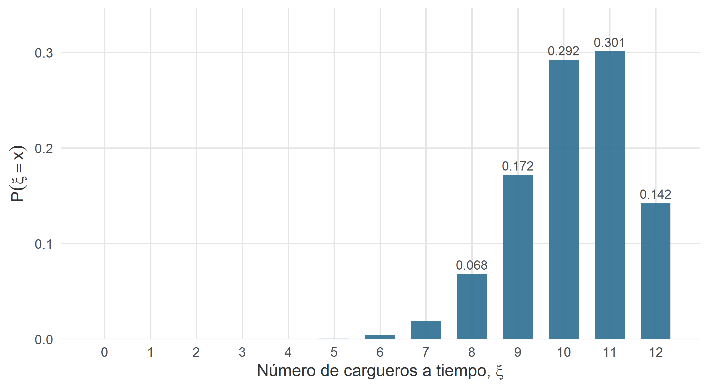
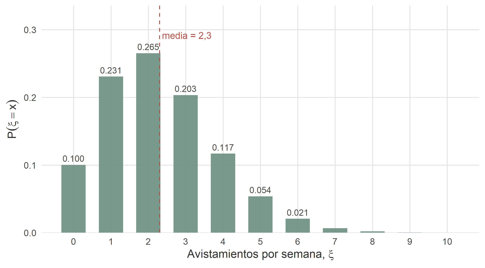
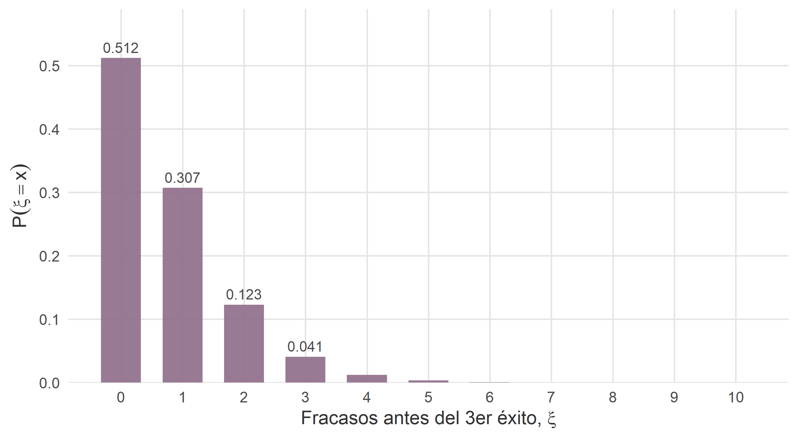
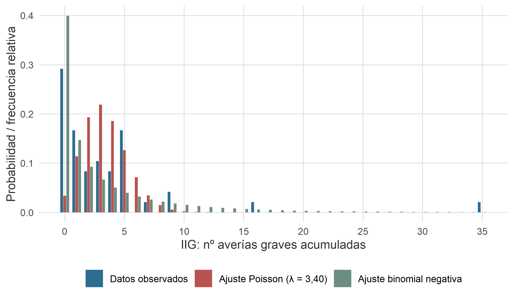
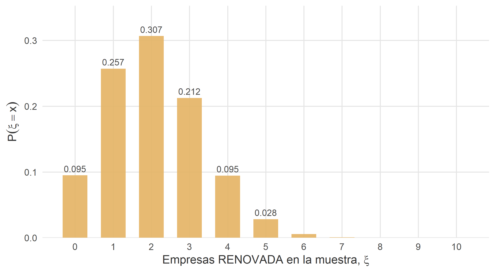
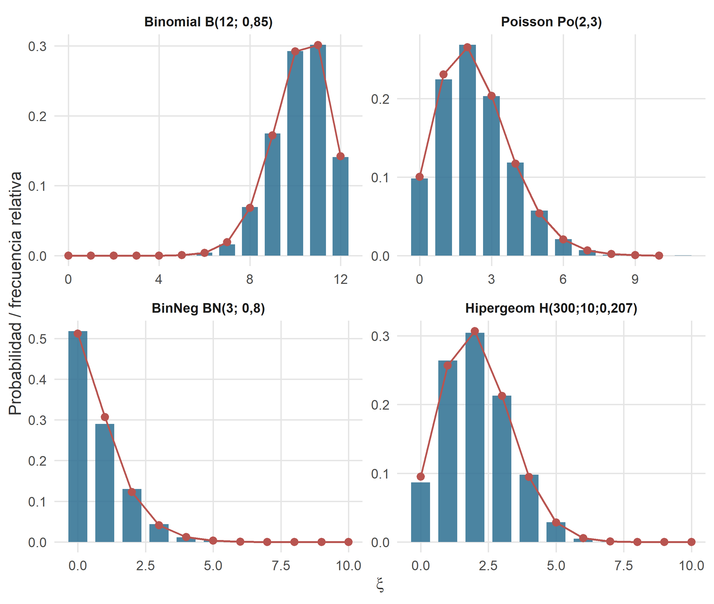

9 Modelos de probabilidad discretos
Figura 9.1. Nadie ha lanzado nunca una moneda infinitas veces. Pero cada vez que lanzamos una, la distribución binomial aparece puntual, como si supiera que la habíamos convocado.
— De un cuaderno de un ingeniero de flotas de arrakis freight, encontrado (dicen) entre dos manuales de mantenimiento.
9.1 Introducción
En el capítulo anterior definimos qué es una variable aleatoria y aprendimos a describirla mediante su función de distribución y, según fuera discreta o continua, mediante su función de cuantía o su función de densidad. Con esas herramientas basta, en teoría, para modelar cualquier fenómeno aleatorio: uno se sienta con lápiz y papel, se pregunta qué valores puede tomar la variable y con qué probabilidad, y ya tiene un modelo.
En la práctica, hay algo mejor. Muchos fenómenos aleatorios comparten exactamente la misma estructura probabilística, aunque su naturaleza sea distinta. El número de contratos que gana vader and company en las próximas diez licitaciones, el número de cargueros de excalibur freight systems que llegan a tiempo hoy y el número de veces que el auditor Han Bubo detecta una irregularidad en veinte inspecciones… son variables aleatorias que viven en universos muy distintos, pero se comportan probabilísticamente igual. Los tres casos responden a la misma pregunta: “en \(n\) intentos, ¿cuántos éxitos?”. Y la respuesta, sea cual sea el disfraz, tiene la misma función de cuantía.
Este capítulo cataloga los principales modelos discretos: las plantillas matemáticas que, bien identificadas, permiten resolver de un plumazo situaciones aparentemente muy dispares. Cada modelo se puede pensar como un molde con un pequeño número de parámetros ajustables. Detectar el molde adecuado —no confundir un experimento binomial con uno hipergeométrico, ni una Poisson con una binomial— es la mitad del trabajo. La otra mitad, aplicar la fórmula, es lo fácil.
Nos ocuparemos aquí de las siguientes distribuciones, en este orden:
- La distribución uniforme discreta, el modelo más elemental: todos los valores posibles son equiprobables.
- El experimento de Bernoulli, que es la piedra angular sobre la que se apoyan todas las demás.
- La distribución binomial, para contar éxitos en \(n\) intentos independientes.
- La distribución de Poisson, apropiada para contar sucesos raros que ocurren en un intervalo de tiempo o de espacio.
- La distribución binomial negativa, que da la vuelta a la pregunta binomial: en lugar de fijar el número de intentos, fija el número de éxitos y cuenta cuántos fracasos aparecen por el camino. Como caso particular, aparecerá la distribución geométrica.
- La distribución hipergeométrica, para el conteo de éxitos en muestreos sin reemplazamiento.
Omitiremos deliberadamente las funciones generatrices; no las echaremos de menos.
Cómo leer este capítulo. Para cada modelo se sigue el mismo guion: primero, el experimento canónico que da lugar al modelo (la intuición); a continuación, la variable aleatoria que se modela y sus parámetros; después, la función de cuantía, la media y la varianza; y por último, uno o varios ejemplos pensados para que se distinga en qué situaciones aplicar cada distribución. Al final del capítulo hay una guía rápida de decisión que responde a la pregunta clave: “¿qué modelo uso?”.
9.2 Distribución uniforme discreta
9.2.1 La intuición: todos los resultados con la misma probabilidad
El modelo más simple imaginable, incluso más que el de Bernoulli: un experimento con un número finito de resultados equiprobables. Si el astropuerto de Coruscant asigna aleatoriamente uno de los ocho muelles disponibles a un carguero que aterriza, la variable “muelle asignado” sigue una distribución uniforme discreta sobre \(\{1, 2, \ldots, 8\}\). Cada muelle tiene la misma probabilidad, \(1/8\), de recibir al carguero.
Otros ejemplos con el mismo esqueleto: la variable “número que sale al lanzar un dado equilibrado” (uniforme sobre \(\{1, \ldots, 6\}\)); “identificador de una empresa elegida al azar entre las 300 del fichero interestelar_300” (uniforme sobre \(\{1, \ldots, 300\}\)); “asiento asignado al pasajero en la lotería semanal del club de vuelo de Naboo”.
9.2.2 Definición formal
Una variable aleatoria \(\xi\) sigue una distribución uniforme discreta sobre el conjunto de \(k\) enteros \(\{a, a+1, \ldots, b\}\) (con \(k = b - a + 1\)) si asigna la misma probabilidad a cada uno de ellos:
\[ \xi \to U(a, b), \qquad P(\xi = x) = \frac{1}{k}, \qquad x \in \{a, a+1, \ldots, b\}. \]
Media y varianza (cálculo directo por sumas de progresiones):
\[ \mu = \frac{a + b}{2}, \qquad \sigma^{2} = \frac{k^{2} - 1}{12}. \]
La media es simplemente el punto medio del rango; la varianza crece con la amplitud del intervalo. Nada más profundo.
Este modelo aparece rara vez en solitario en el mundo empresarial, pero es la base de dos aplicaciones enormemente importantes: el muestreo aleatorio simple —cada elemento de una población tiene la misma probabilidad de ser elegido— y la generación de números aleatorios en el ordenador, que es el punto de partida de casi cualquier simulación estadística contemporánea. Cada vez que R responde a sample(1:300, 10), está sacando diez números de una uniforme discreta.
9.3 Experimento de Bernoulli
9.3.1 La intuición: éxito o fracaso
Después del uniforme, la situación más simple imaginable: un experimento que solo puede dar dos resultados. Nada de matices, nada de terceras vías. Es lo que se conoce como un experimento de Bernoulli, en honor a Jacob Bernoulli, quien lo formalizó hacia finales del siglo XVII y con ello dejó, sin saberlo, el andamio matemático para todo lo que sigue.
Un carguero de arrakis freight sale esta madrugada de Arrakis con destino a Klendathu. Al aterrizar mañana en el astropuerto de destino, solo pueden pasar dos cosas: que llegue a tiempo (llamémoslo éxito) o que no lo haga (llamémoslo fracaso). No hay medias tintas: o cumple ventana o no la cumple.1 Ese es, entero y verdadero, un experimento de Bernoulli.
Otros ejemplos, con el mismo esqueleto: el auditor Luke Diomedea abre un contenedor al azar y lo declara conforme o no conforme; una nave del astillero KORRIGAN se somete a inspección técnica y la supera o no la supera; un cliente potencial en Tatooine recibe una oferta comercial y contrata o no contrata.
9.3.2 Definición formal
Sea un experimento con dos resultados posibles, éxito y fracaso. Codifiquemos el resultado con una variable numérica: \(\xi = 1\) si sale éxito, \(\xi = 0\) si sale fracaso. Sea \(p \in [0, 1]\) la probabilidad de éxito (y por tanto \(q = 1 - p\) la de fracaso). La variable \(\xi\) así definida sigue una distribución de Bernoulli de parámetro \(p\), y escribimos:
\[ \xi \to B(1; p). \]
El único parámetro del modelo es \(p\), la probabilidad de éxito. Con él queda todo dicho. Los casos \(p = 0\) o \(p = 1\) son admisibles pero degenerados: la variable es en realidad determinista.
Función de cuantía. La probabilidad de cada uno de los dos únicos valores posibles se puede escribir de forma compacta:
\[ P(\xi = x) = p^{x} \cdot q^{\,1-x}, \qquad x \in \{0, 1\}. \]
Es un truco de notación: si \(x = 1\), la fórmula devuelve \(p\); si \(x = 0\), devuelve \(q\). Nada más.
Media y varianza. Para un Bernoulli son extremadamente sencillas —y merecen quedar grabadas:
\[ \mu = E(\xi) = p, \qquad \sigma^{2} = \operatorname{Var}(\xi) = p \cdot q. \]
La media, \(p\), se puede leer literalmente como “la proporción esperada de éxitos si se repitiese el experimento muchas veces”. La varianza alcanza su máximo, \(0{,}25\), cuando \(p = 0{,}5\) —cuando el resultado es más incierto— y se anula en los extremos \(p = 0\) o \(p = 1\), donde ya no hay azar del que hablar.
9.3.3 Un ejemplo mínimo
Basándonos en los registros históricos de puntualidad de arrakis freight, el 85 % de sus cargueros llegan a tiempo a la ventana comprometida. Sea \(\xi\) la variable “el carguero de esta madrugada llega a tiempo”. Entonces \(\xi \to B(1; 0{,}85)\), y:
- \(P(\xi = 1) = 0{,}85\) (probabilidad de éxito).
- \(P(\xi = 0) = 0{,}15\) (probabilidad de fracaso).
- \(E(\xi) = 0{,}85\); \(\operatorname{Var}(\xi) = 0{,}85 \cdot 0{,}15 = 0{,}1275\).
Con un solo carguero, el Bernoulli agota el problema. Pero raras veces despacha una compañía un solo carguero: normalmente despacha muchos, y de ahí nace el modelo binomial.
9.4 Distribución binomial
9.4.1 La intuición: contar éxitos en \(n\) intentos
Si el Bernoulli describe un solo intento, la distribución binomial describe lo que ocurre cuando repetimos \(n\) veces ese mismo intento, en condiciones idénticas y sin que unos resultados influyan sobre otros. Esas dos condiciones —idénticas y sin influencia mutua, es decir, independientes— son la carta de identidad del modelo. Si fallan, el modelo binomial también.
Volvamos a arrakis freight. Según el fichero interestelar_300.xlsx, esta compañía dispone de una flota de 24 cargueros. Suponga el lector que esta madrugada despachan 12 de ellos, todos hacia Klendathu, cada uno de manera independiente (naves distintas, tripulaciones distintas, ventanas distintas). Cada carguero llega a tiempo con probabilidad \(p = 0{,}85\). La variable
\[ \xi = \text{“número de cargueros de los 12 que llegan a tiempo”} \]
toma valores en \(\{0, 1, 2, \ldots, 12\}\), y sigue una distribución binomial. Escribimos \(\xi \to B(12; 0{,}85)\). La misma matemática vale, sin cambiar una coma, para “número de aciertos en 12 lanzamientos de una moneda cargada”, “número de aprobados de 12 alumnos en un examen” o “número de reactores conformes de 12 tests en la línea de montaje”. El molde es el mismo.
9.4.2 Definición formal
Un experimento binomial es la repetición de \(n\) ensayos independientes de Bernoulli, todos con la misma probabilidad de éxito \(p\). La variable aleatoria “número total de éxitos en los \(n\) ensayos” sigue una distribución binomial de parámetros \(n\) y \(p\):
\[ \xi \to B(n; p). \]
Función de cuantía:
\[ P(\xi = x) \;=\; \binom{n}{x} \, p^{x} \, q^{\,n-x}, \qquad x = 0, 1, 2, \ldots, n, \]
donde \(q = 1 - p\). El coeficiente binomial \(\binom{n}{x}\) cuenta las maneras distintas de que los \(x\) éxitos aparezcan repartidos entre los \(n\) intentos; el producto \(p^{x} q^{n-x}\) mide la probabilidad de una de esas maneras concretas.
Media y varianza:
\[ \mu = E(\xi) = n \cdot p, \qquad \sigma^{2} = \operatorname{Var}(\xi) = n \cdot p \cdot q. \]
La media es coherente con el sentido común: si cada intento aporta \(p\) éxitos “en promedio”, \(n\) intentos aportan \(n \cdot p\).
Propiedad reproductiva. Si \(\xi_1 \to B(n_1; p)\), \(\xi_2 \to B(n_2; p)\)… son variables binomiales independientes con el mismo \(p\), su suma también es binomial: \(\xi_1 + \xi_2 + \cdots + \xi_m \to B(n_1 + n_2 + \cdots + n_m; p)\). En términos operativos: da lo mismo mirar los cargueros que despachan hoy tres delegaciones distintas de la empresa por separado o agregados, siempre que la puntualidad se rija por la misma \(p\) en todas.
9.4.3 Ejemplo: los 12 cargueros de arrakis freight
Retomamos el escenario anterior. \(\xi \to B(12; 0{,}85)\). La media es \(\mu = 12 \cdot 0{,}85 = 10{,}2\) cargueros a tiempo (en promedio, si la operación se repitiese muchos días), y la desviación típica ronda los \(1{,}24\). Algunas preguntas concretas:
-
Que los 12 lleguen a tiempo.
\[ P(\xi = 12) = \binom{12}{12} \cdot 0{,}85^{12} \cdot 0{,}15^{0} = 0{,}85^{12} \approx 0,1422. \]
Es decir, unas 14 madrugadas de cada 100. Suficientemente frecuente para que un jefe de operaciones no se sorprenda; suficientemente raro para no darlo por hecho.
-
Que al menos 10 lleguen a tiempo.
\[ P(\xi \geq 10) = \sum_{x=10}^{12} \binom{12}{x} \, 0{,}85^{x} \, 0{,}15^{\,12-x} \approx 0,7358. \]
Casi tres de cada cuatro madrugadas se llega a este umbral.
-
Que a lo sumo 8 lleguen a tiempo. Un mal día operativo, vamos.
\[ P(\xi \leq 8) \approx 0,0922. \]
Alrededor de una madrugada de cada once. Poco frecuente; y cuando ocurre, en la oficina se abre la investigación.
La figura 9.2 muestra la forma completa de la distribución. Concentrada en torno a la media \(10{,}2\), con colas rápidamente amortiguadas, es el retrato típico de una binomial con \(p\) alta.

Figura 9.2. Función de cuantía de la variable \(\xi \to B(12; 0{,}85)\): número de cargueros (de 12) de arrakis freight que llegan a tiempo. La probabilidad se concentra en la zona alta del rango porque los cargueros suelen cumplir la ventana.
9.4.4 Un aviso importante sobre la independencia
La binomial funciona solo cuando los ensayos son independientes y la probabilidad \(p\) es la misma en todos. Si los 12 cargueros tuvieran que atravesar la misma tormenta ionizante en el sector Klendathu, los fracasos ya no serían independientes y la binomial infraestimaría la probabilidad de un desastre colectivo. Del mismo modo, si tres de los doce cargueros son antiguos —con tasas de puntualidad distintas—, tampoco vale la binomial pura. La estadística no tiene reparo en dar respuestas equivocadas: las da cuando le pedimos que aplique el modelo equivocado.
9.5 Distribución de Poisson
9.5.1 La intuición: sucesos raros en un intervalo
La distribución de Poisson aparece cuando se cuenta el número de veces que sucede un evento raro, pero con muchísimas oportunidades de suceder. El ejemplo prototípico: no cuentan a los cargueros que llegan a tiempo, sino a los que sufren una avería grave durante un viaje. La avería es rara, sí; pero se dispone de un año entero, con decenas de miles de trayectos, para que ocurra. ¿Cuántas averías ocurrirán este año?
Estrictamente hablando, cualquier proceso de conteo de este tipo es una binomial: si hay \(n = 250{.}000\) oportunidades y en cada una la probabilidad de avería es \(p = 8 \cdot 10^{-6}\), el número de averías es \(B(n; p)\). Pero calcular \(\binom{250{.}000}{x} \cdot p^{x} \cdot q^{n-x}\) es incómodo (por decirlo suavemente) y, cuando \(n\) es grande y \(p\) pequeño, hay una fórmula mucho más ligera que da prácticamente el mismo resultado: la de Poisson.
9.5.2 Definición formal
Sea \(\xi\) una variable aleatoria que cuenta el número de sucesos raros que ocurren en un intervalo (de tiempo, de espacio, de oportunidades). Si el proceso subyacente es binomial con \(n\) grande y \(p\) pequeño, tales que \(n \cdot p\) se mantiene en un valor \(\lambda\) moderado, entonces \(\xi\) se aproxima muy bien por una distribución de Poisson de parámetro \(\lambda\):
\[ \xi \to \mathrm{Po}(\lambda). \]
El único parámetro, \(\lambda\), es simplemente el número esperado de sucesos por intervalo. Su interpretación es tan directa que es difícil confundirse: si \(\lambda = 2{,}3\), se esperan \(2{,}3\) sucesos por intervalo. La rareza se codifica en la aritmética: si \(\lambda\) es pequeño, la mayor parte de la masa se concentra en torno a \(x = 0\); si \(\lambda\) es grande, la distribución se desplaza y ensancha.
Función de cuantía:
\[ P(\xi = x) \;=\; \frac{e^{-\lambda} \, \lambda^{x}}{x!}, \qquad x = 0, 1, 2, 3, \ldots \]
Un detalle a menudo pasado por alto: la Poisson no tiene tope. La variable puede tomar cualquier valor entero no negativo, por grande que sea. En la práctica, con \(\lambda\) pequeño, las probabilidades caen tan rápido que valores altos son irrelevantes.
Media y varianza:
\[ \mu = E(\xi) = \lambda, \qquad \sigma^{2} = \operatorname{Var}(\xi) = \lambda. \]
Una de las señas de identidad de la Poisson es que su media coincide con su varianza. Este hecho, que no tiene análogo en la binomial, sirve incluso como test empírico: si en unos datos de conteo la varianza es aproximadamente igual a la media, la Poisson es una candidata razonable; si es mucho mayor (sobredispersión), no lo es. Volveremos sobre esto en un momento.
Propiedad reproductiva. La Poisson también se suma bien: si \(\xi_1 \to \mathrm{Po}(\lambda_1)\) y \(\xi_2 \to \mathrm{Po}(\lambda_2)\) son independientes, entonces \(\xi_1 + \xi_2 \to \mathrm{Po}(\lambda_1 + \lambda_2)\). Traducido a operaciones: si en el sector A del hipercorredor Coruscant–Naboo se avistan piratas espaciales con tasa \(1{,}0\) por semana, y en el sector B con tasa \(1{,}3\), entonces en el corredor completo se avistan con tasa \(2{,}3\) por semana.
9.5.3 Ejemplo 1: piratas espaciales en la ruta Coruscant–Naboo
vader and company opera cargueros de gran tonelaje en el corredor Coruscant–Naboo (Vía Láctea). Los registros de los últimos años cifran en \(\lambda = 2{,}3\) el número medio de avistamientos de piratas por semana en toda la ruta. Como \(\lambda\) es moderado y estable, es razonable modelar \(\xi = \text{“avistamientos en una semana”}\) como \(\xi \to \mathrm{Po}(2{,}3)\).
Algunas probabilidades de interés:
-
Semana tranquila (cero avistamientos).
\[ P(\xi = 0) = \frac{e^{-2{,}3} \, 2{,}3^{0}}{0!} = e^{-2{,}3} \approx 0,1003. \]
Alrededor de una de cada diez semanas.
-
Semana movida (tres o más avistamientos).
\[ P(\xi \geq 3) = 1 - P(\xi \leq 2) \approx 0,4040. \]
Alrededor del 40 % de las semanas hay tres o más avistamientos: llamar a esto “raro” es cuestión de perspectiva.
La figura 9.3 muestra la cuantía completa. Nótese la asimetría a la derecha, típica de las Poisson con \(\lambda\) pequeño o moderado: es más difícil bajar de la media (limitada por el cero) que subir por encima.

Figura 9.3. Función de cuantía de \(\xi \to \mathrm{Po}(2{,}3)\): avistamientos de piratas por semana en el corredor Coruscant–Naboo. La media coincide con la varianza; ambas valen \(2{,}3\).
9.5.4 Ejemplo 2: la Poisson como aproximación de la binomial
El astillero KORRIGAN monta cada casco con \(n = 2\,000\) remaches de aleación de titanio-Aldenaanaano. Cada remache tiene una probabilidad \(p = 0{,}001\) de salir defectuoso, independiente del resto. Sea \(\xi\) el número de remaches defectuosos por casco.
Estrictamente, \(\xi \to B(2\,000;\, 0{,}001)\). Pero \(n\) es grande y \(p\) es pequeño; su producto \(\lambda = n \cdot p = 2\) es modesto. En esas condiciones, la Poisson \(\mathrm{Po}(2)\) da una respuesta prácticamente idéntica a la binomial:
\[ P(\xi = 3) \;\text{ (Binomial exacta) } = 0,180537, \qquad P(\xi = 3) \;\text{ (Poisson aprox.) } = 0,180447. \]
La coincidencia hasta la quinta cifra decimal no es casualidad: se puede demostrar que la binomial converge a la Poisson cuando \(n \to \infty\), \(p \to 0\) y \(n \cdot p = \lambda\) permanece constante. En términos operativos, la regla práctica que suele darse en manuales de ingeniería es:
Regla práctica (Binomial → Poisson). Si \(n \geq 30\) y \(p \leq 0{,}05\) (idealmente \(p \leq 0{,}01\)), la aproximación \(B(n; p) \approx \mathrm{Po}(n \cdot p)\) suele ser excelente. Cuanto más grande sea \(n\) y más pequeña sea \(p\), mejor.
9.5.5 Ejemplo 3: llegada de clientes y el proceso de Poisson
Existe una tercera aplicación del modelo, particularmente frecuente en economía y en gestión de operaciones: los procesos de llegada —clientes a un mostrador, pedidos a un almacén, siniestros a una aseguradora, órdenes de compra a un sistema de trading—. Cuando los eventos ocurren de forma independiente y a una tasa media estable, el número de eventos en un intervalo de tiempo dado sigue una Poisson. Esta idea, formalizada, se conoce como proceso de Poisson.
La agencia bancaria que la empresa hyperdrive express tiene en Coruscant registra, en promedio, \(\lambda = 6\) clientes por hora en su ventanilla de operaciones interestelares. Modelando el flujo como un proceso de Poisson:
- Probabilidad de que en una hora concreta lleguen exactamente \(4\) clientes: \[ P(\xi = 4) = \frac{e^{-6} \, 6^{4}}{4!} \approx 0,1339. \]
- Probabilidad de una hora sin clientes (¿día festivo galáctico?): \[ P(\xi = 0) = e^{-6} \approx 0,0025. \]
- Probabilidad de una hora “punta” con más de 10 clientes: \[ P(\xi > 10) = 1 - P(\xi \le 10) \approx 0,0426. \]
Este mismo esquema es la base de la teoría de colas —cuántas ventanillas abrir, cuánto personal contratar— y de la teoría del riesgo actuarial —cómo tarificar una prima cuando los siniestros llegan según un proceso de Poisson—. Dos aplicaciones económicas de primerísimo nivel, ambas apoyadas sobre la misma fórmula con la que hemos contado piratas.
9.5.6 Cuando la Poisson no basta: la sobredispersión
La Poisson es un modelo generoso, pero exige que media y varianza coincidan. En la práctica empresarial, esta condición se cumple en pocas ocasiones. Los datos reales de conteo suelen presentar sobredispersión: la varianza empírica es notablemente mayor que la media, porque los individuos no son homogéneos (unas unidades son más propensas al suceso que otras) o porque los eventos tienden a llegar en rachas.
Un ejemplo con datos R-Stars. La variable IIG del fichero astilleros_48 recoge el número de averías graves acumuladas por cada una de las 48 naves de la flota galáctica a lo largo de su vida operativa. Si el proceso de fallo fuera puramente Poisson, esperaríamos que la varianza empírica se pareciera a la media empírica. Veamos:
| Estadístico | Valor |
|---|---|
| Media \(\bar x\) | 3,40 |
| Varianza \(s^2\) | 31,31 |
| Ratio \(s^2 / \bar x\) | 9,22 |
Tabla 9.1. Media y varianza empíricas de la variable IIG (averías graves acumuladas por nave). El ratio, muy superior a 1, es un indicador claro de sobredispersión.
Con un ratio varianza/media de más de \(9\), la variable IIG está muy lejos de comportarse como una Poisson. La razón es empíricamente evidente: la mayor parte de las naves acumulan pocas averías, pero un pequeño número de ellas —dos o tres unidades problemáticas— arrastran valores muy altos (\(16\) y \(35\) averías) que hinchan la varianza sin afectar demasiado a la media. En el capítulo anterior ya vimos este patrón: es una distribución con cola pesada.
Regla práctica. Si en unos datos de conteo el ratio \(s^2 / \bar x\) está cercano a 1, la Poisson es una buena candidata. Si es sustancialmente mayor que 1 (por ejemplo, mayor que 2), hay sobredispersión y conviene buscar otro modelo. El candidato natural, como veremos enseguida, es la binomial negativa.
9.6 Distribución binomial negativa
9.6.1 La intuición: éxitos fijos, fracasos por contar
La distribución binomial se hacía una pregunta: fijado el número de intentos \(n\), ¿cuántos éxitos? La binomial negativa invierte el papel: fijado el número de éxitos \(r\), ¿cuántos fracasos aparecen antes de completar los \(r\) éxitos?
Un caso pedagógico: la fábrica de reactores de corellian freightworks, en Qo’noS, certifica una tanda de motores sólo cuando tres reactores consecutivos —no necesariamente seguidos, sino tres reactores válidos en total— pasan el banco de pruebas. Cada reactor pasa la prueba con probabilidad \(p = 0{,}8\) (fracaso \(q = 0{,}2\)). El ingeniero jefe Anakin Falco necesita saber, antes de encargar la tanda siguiente, cuántos reactores defectuosos previsiblemente tendrá que apartar antes de completar la certificación. Es decir, cuántos fracasos verá antes del tercer éxito. Esa es la variable binomial negativa.
Otros ejemplos análogos: cuántos clientes rechazan una oferta comercial antes de que un vendedor cierre sus dos primeros contratos del mes; cuántas rutas hay que probar antes de dar con las tres primeras en las que la meteo permite despegar; cuántos aterrizajes fallidos acumula un piloto novato antes de conseguir cinco aterrizajes válidos.
9.6.2 Definición formal
Sea un experimento de Bernoulli con probabilidad de éxito \(p\) que se repite indefinidamente hasta acumular \(r\) éxitos. La variable
\[ \xi = \text{“número de fracasos observados antes de alcanzar el $r$-ésimo éxito”} \]
sigue una distribución binomial negativa de parámetros \(r\) y \(p\):
\[ \xi \to \mathrm{BN}(r; p). \]
Función de cuantía:
\[ P(\xi = x) \;=\; \binom{x + r - 1}{x} \, p^{r} \, q^{x}, \qquad x = 0, 1, 2, 3, \ldots, \]
donde \(q = 1 - p\). Intuitivamente, el último ensayo tiene que ser un éxito (el \(r\)-ésimo); en los \(x + r - 1\) ensayos anteriores hay que colocar los \(x\) fracasos, de ahí el coeficiente binomial.
Media y varianza:
\[ \mu = E(\xi) = r \cdot \frac{q}{p}, \qquad \sigma^{2} = \operatorname{Var}(\xi) = r \cdot \frac{q}{p^{2}}. \]
Que la media dependa de \(q/p\) tiene una interpretación transparente: si \(p\) es alto, \(q/p\) es pequeño y los fracasos previsiblemente serán pocos; si \(p\) es bajo, se acumularán muchos fracasos por cada éxito conseguido. Y nótese que la varianza siempre es mayor que la media: la BN es un modelo naturalmente sobredisperso, y por eso tan útil, como veremos, para modelar recuentos empresariales reales.
Propiedad reproductiva. Si \(\xi_1 \to \mathrm{BN}(r_1; p)\), \(\xi_2 \to \mathrm{BN}(r_2; p)\) son independientes con la misma \(p\), entonces \(\xi_1 + \xi_2 \to \mathrm{BN}(r_1 + r_2; p)\).
9.6.3 Ejemplo: la certificación de reactores en Qo’noS
Recuperemos el caso de corellian freightworks. La variable \(\xi = \text{“reactores defectuosos apartados antes del tercer reactor válido”}\) sigue \(\xi \to \mathrm{BN}(3;\, 0{,}8)\). La media es
\[ \mu = 3 \cdot \frac{0{,}2}{0{,}8} = 0{,}75 \text{ reactores defectuosos.} \]
Anakin Falco espera, en promedio, tener que descartar tres cuartos de reactor —lo que en la práctica significa: casi ninguno o, con mala suerte, uno—. La probabilidad de que descarte exactamente dos reactores defectuosos antes de certificar la tanda es
\[ P(\xi = 2) = \binom{2 + 3 - 1}{2} \cdot 0{,}8^{3} \cdot 0{,}2^{2} = 6 \cdot 0{,}512 \cdot 0{,}04 \approx 0,1229. \]
La figura 9.4 ilustra la distribución completa. La probabilidad se concentra en valores muy bajos (0 o 1 fracasos), coherente con una \(p\) alta.

Figura 9.4. Función de cuantía de \(\xi \to \mathrm{BN}(3;\, 0{,}8)\): número de reactores defectuosos apartados antes del tercer reactor válido en la fábrica de corellian freightworks.
9.6.4 Caso particular: la distribución geométrica
Cuando \(r = 1\) —esto es, cuando lo que interesa es cuántos fracasos aparecen antes del primer éxito— la binomial negativa recibe un nombre propio: distribución geométrica. Se denota
\[ \xi \to G(p), \]
y su función de cuantía se simplifica notablemente:
\[ P(\xi = x) = p \cdot q^{x}, \qquad x = 0, 1, 2, 3, \ldots \]
Media y varianza (heredadas de la binomial negativa con \(r = 1\)):
\[ \mu = \frac{q}{p}, \qquad \sigma^{2} = \frac{q}{p^{2}}. \]
Un ejemplo doméstico: el piloto novato Rey Solo se está sacando la licencia de aterrizaje en el complejo hotelero Fhloston Paradise. Cada intento tiene una probabilidad \(p = 0{,}6\) de terminar con el carguero suavemente posado sobre la plataforma flotante (y \(q = 0{,}4\) de terminar en el mar). Sea \(\xi\) el número de intentos fallidos antes del primer aterrizaje exitoso. Entonces \(\xi \to G(0{,}6)\), y por ejemplo:
\[ P(\xi = 2) = 0{,}6 \cdot 0{,}4^{2} = 0{,}0960. \]
En promedio, Rey esperará \(q/p \approx 0{,}67\) intentos fallidos —casi ninguno, aunque estos casos casi nunca van “casi bien”— antes de coronar el aterrizaje.
Cuidado con la convención. Algunos textos llaman “distribución geométrica” al número de intentos totales hasta el primer éxito, no al número de fracasos previos. Ambas convenciones son legítimas, se relacionan por un desfase de una unidad, pero sus medias son distintas (\(1/p\) frente a \(q/p\)). En este manual seguimos la convención “fracasos previos”, coherente con la binomial negativa que la contiene.
9.6.5 Un uso moderno: la BN como remedio a la sobredispersión
Al margen de su interpretación clásica —“cuántos fracasos antes del \(r\)-ésimo éxito”—, la distribución binomial negativa tiene hoy en día un papel de primerísima línea en la econometría de recuentos: es el modelo de referencia para variables de conteo que presentan sobredispersión, es decir, casi todas las variables de conteo con las que se topa un economista.
Recuperemos el ejemplo de la variable IIG (averías graves acumuladas). La Poisson, con media y varianza forzadas a coincidir, fracasa: no sabe reproducir la cola larga de las naves problemáticas. La binomial negativa, con su parámetro extra, sí puede: su varianza \(\sigma^{2} = r q / p^{2}\) es siempre mayor que su media \(\mu = r q / p\), y ajustando adecuadamente los parámetros \(r\) y \(p\) podemos hacer que reproduzca el nivel de sobredispersión observado en los datos.
La figura 9.5 compara las tres cosas: la distribución empírica de IIG, el ajuste Poisson (deficiente) y el ajuste binomial negativa (bastante mejor).

Figura 9.5. Distribución empírica del número de averías graves acumuladas (IIG) por las 48 naves de la flota galáctica, comparada con dos ajustes teóricos. La Poisson (rojo) infraestima gravemente la cola larga; la binomial negativa (verde), calibrada para reproducir la sobredispersión observada, se ajusta bastante mejor.
Este uso moderno de la BN —como Poisson “flexible” que admite sobredispersión— es el que aparece cuando un banco modela el número anual de reclamaciones por cliente, cuando una aseguradora modela el número de siniestros por póliza, o cuando un ecommerce modela el número de compras por usuario. Su versatilidad la ha convertido en una herramienta habitual de la caja de herramientas del analista económico.
9.7 Distribución hipergeométrica
9.7.1 La intuición: contar éxitos en una muestra sin reemplazamiento
Todas las distribuciones anteriores compartían un supuesto tácito: los ensayos eran independientes. Cada carguero llega a tiempo con la misma probabilidad, sin que el destino de los demás influya. Ese supuesto se rompe en cuanto un muestreo se hace sin reemplazamiento sobre una población finita: cada extracción cambia la composición de las que quedan, y con ella las probabilidades del siguiente ensayo.
El ejemplo canónico es la auditoría. La Comisión Interestelar de Transporte va a auditar \(n\) empresas de las 300 registradas en el fichero interestelar_300.xlsx. Sabemos que de esas 300, hay \(N_1 = 62\) con flota renovada (categoría RENOVADA de la variable EFLO) y las \(238\) restantes tienen flota antigua o madura. La Comisión selecciona 10 empresas al azar, sin reemplazamiento (evidentemente: nadie audita dos veces a la misma), y quiere saber cuántas de las 10 tendrán flota renovada. Esa variable no es binomial —los ensayos no son independientes— sino hipergeométrica.
9.7.2 Definición formal
Sea una población finita de \(N\) elementos, de los cuales \(N_1\) son de un tipo (llamémoslo éxito) y los restantes \(N - N_1\) del otro (fracaso). Se extrae al azar y sin reemplazamiento una muestra de \(n\) elementos. La variable
\[ \xi = \text{“número de éxitos en la muestra de $n$”} \]
sigue una distribución hipergeométrica de parámetros \(N\), \(n\) y \(p = N_1 / N\):
\[ \xi \to H(N; n; p). \]
Nótese que el parámetro \(p = N_1 / N\) codifica la proporción de éxitos en la población, no en la muestra.
Función de cuantía:
\[ P(\xi = x) \;=\; \frac{\dbinom{N_1}{x} \cdot \dbinom{N - N_1}{n - x}}{\dbinom{N}{n}}, \qquad x = 0, 1, 2, \ldots, n. \]
La fórmula tiene una lectura combinatoria muy limpia: entre las \(\binom{N}{n}\) maneras posibles de extraer una muestra de \(n\) elementos, cuento aquellas que contienen exactamente \(x\) elementos “éxito” (elegidos entre los \(N_1\) disponibles, \(\binom{N_1}{x}\) maneras) y \(n - x\) elementos “fracaso” (elegidos entre los \(N - N_1\) disponibles).
Media y varianza:
\[ \mu = E(\xi) = n \cdot p, \qquad \sigma^{2} = \operatorname{Var}(\xi) = n \cdot p \cdot q \cdot \frac{N - n}{N - 1}. \]
La media es idéntica a la de la binomial. La varianza, no: aparece un factor extra \(\frac{N - n}{N - 1}\), conocido como factor de corrección de población finita. Ese factor siempre es menor o igual que \(1\), y refleja el hecho de que un muestreo sin reemplazamiento es más informativo que uno con reemplazamiento: al no repetirse elementos, la variabilidad se reduce.
9.7.3 Ejemplo: auditoría de flotas
Retomemos la Comisión Interestelar. \(\xi \to H(300;\, 10;\, 62/300) = H(300;\, 10;\, 0{,}2067)\). La media es
\[ \mu = 10 \cdot \frac{62}{300} \approx 2{,}07 \text{ empresas con flota renovada.} \]
Algunas probabilidades relevantes:
- \(P(\xi = 0) \approx 0,0949\): que ninguna empresa auditada tenga flota renovada.
- \(P(\xi = 2) \approx 0,3066\): el resultado más probable.
- \(P(\xi \geq 3) \approx 0,3417\): probabilidad de encontrar tres o más empresas con flota renovada, alrededor del 34 %.
La figura 9.6 muestra la distribución completa. Es asimétrica a la derecha porque la proporción de éxitos en la población, \(p \approx 0{,}21\), es baja.

Figura 9.6. Función de cuantía de \(\xi \to H(300;\, 10;\, 62/300)\): número de empresas con flota renovada en una muestra aleatoria de 10 empresas auditadas.
9.7.4 Cómo distinguir binomial de hipergeométrica
Esta es la otra confusión frecuente: binomial e hipergeométrica cuentan la misma cosa (éxitos en una muestra), y difieren solo en un detalle crítico: el muestreo. La regla es simple:
Regla mnemónica. Si se muestrea con reemplazamiento (o de una población tan grande que da lo mismo), es binomial. Si se muestrea sin reemplazamiento de una población finita, es hipergeométrica.
Ahora bien, cuando la muestra es una fracción muy pequeña de la población, el hecho de reemplazar o no apenas cambia las probabilidades. Se puede demostrar formalmente que:
\[ H(N;\, n;\, p) \;\xrightarrow[\;p \text{ pequeño}\;]{}\; B(n;\, p). \]
En la práctica se suele aceptar esta aproximación cuando \(p = N_1 / N < 0{,}1\); un criterio alternativo, también habitual, es exigir que la muestra represente menos del 5–10 % de la población, esto es, \(n / N < 0{,}1\). La tabla 9.2 lo hace evidente en nuestro caso de la auditoría: con \(p \approx 0{,}21\) (algo alto para la aproximación), las diferencias entre las probabilidades hipergeométricas exactas y las binomiales aproximadas son moderadas pero perceptibles.
| \(x\) | Hipergeométrica \(H(300; 10; 0{,}207)\) | Binomial \(B(10; 0{,}207)\) | Diferencia |
|---|---|---|---|
| 0 | 0.0949 | 0.0988 | -0.0039 |
| 1 | 0.2569 | 0.2573 | -0.0004 |
| 2 | 0.3066 | 0.3016 | +0.0050 |
| 3 | 0.2123 | 0.2095 | +0.0028 |
| 4 | 0.0945 | 0.0955 | -0.0010 |
| 5 | 0.0282 | 0.0299 | -0.0016 |
Tabla 9.2. Comparación entre las probabilidades exactas hipergeométricas y su aproximación binomial en el ejemplo de la auditoría de flotas. Con \(p \approx 0{,}21\) las diferencias son pequeñas pero visibles; para \(p<0{,}1\) serían despreciables.
Cuando la aproximación es válida, se prefiere la binomial por dos motivos: la fórmula es más sencilla y no requiere conocer el tamaño de la población \(N\), solo la proporción de éxitos.
9.8 Simulación de modelos discretos con R
Todas las distribuciones vistas están implementadas en R con las cuatro funciones estándar d*, p*, q* y r*. Cerramos el capítulo con una vuelta práctica: la letra r corresponde a la simulación, y permite generar realizaciones aleatorias de cualquiera de los modelos con una sola línea de código. La tabla 9.3 resume las llamadas para las distribuciones de este capítulo.
| Modelo | Función R | Ejemplo |
|---|---|---|
| Uniforme discreta |
sample(a:b, n, replace = TRUE)
|
sample(1:6, 100, replace = TRUE)
|
| Bernoulli |
rbinom(n, 1, p)
|
rbinom(50, 1, 0.85)
|
| Binomial |
rbinom(n, size, prob)
|
rbinom(1000, 12, 0.85)
|
| Poisson |
rpois(n, lambda)
|
rpois(1000, 2.3)
|
| Binomial negativa |
rnbinom(n, size, prob)
|
rnbinom(1000, 3, 0.8)
|
| Geométrica |
rgeom(n, prob)
|
rgeom(1000, 0.6)
|
| Hipergeométrica |
rhyper(nn, m, n, k)
|
rhyper(1000, 62, 238, 10)
|
Tabla 9.3. Funciones de R para simular los modelos discretos del capítulo. Cambiando la letra r inicial por d, p o q se accede, respectivamente, a la función de cuantía, la de distribución acumulada y los cuantiles.
La figura 9.7 simula 5.000 realizaciones de cada uno de los cuatro modelos “de conteo” más importantes del capítulo, aplicados a los escenarios que hemos ido presentando, y compara el histograma empírico con las probabilidades teóricas. La coincidencia es —como debe— casi perfecta.
set.seed(9)
N <- 5000
# Cuatro simulaciones distintas
sim_bin <- tibble(modelo = "Binomial B(12; 0,85)",
x = rbinom(N, 12, 0.85))
sim_poi <- tibble(modelo = "Poisson Po(2,3)",
x = rpois(N, 2.3))
sim_bn <- tibble(modelo = "BinNeg BN(3; 0,8)",
x = rnbinom(N, 3, 0.8))
sim_hyp <- tibble(modelo = "Hipergeom H(300;10;0,207)",
x = rhyper(N, 62, 238, 10))
sim_all <- bind_rows(sim_bin, sim_poi, sim_bn, sim_hyp) |>
mutate(modelo = factor(modelo, levels = c(
"Binomial B(12; 0,85)", "Poisson Po(2,3)",
"BinNeg BN(3; 0,8)", "Hipergeom H(300;10;0,207)"
)))
teor <- bind_rows(
tibble(modelo = "Binomial B(12; 0,85)", x = 0:12,
p = dbinom(0:12, 12, 0.85)),
tibble(modelo = "Poisson Po(2,3)", x = 0:10,
p = dpois(0:10, 2.3)),
tibble(modelo = "BinNeg BN(3; 0,8)", x = 0:10,
p = dnbinom(0:10, 3, 0.8)),
tibble(modelo = "Hipergeom H(300;10;0,207)", x = 0:10,
p = dhyper(0:10, 62, 238, 10))
) |>
mutate(modelo = factor(modelo, levels = levels(sim_all$modelo)))
ggplot(sim_all, aes(x = x)) +
geom_bar(aes(y = after_stat(prop), group = 1),
fill = pal_apoyo, alpha = 0.85, width = 0.7) +
geom_point(data = teor, aes(x = x, y = p),
color = pal_acento, size = 2) +
geom_line(data = teor, aes(x = x, y = p, group = 1),
color = pal_acento, linewidth = 0.6) +
facet_wrap(~ modelo, scales = "free", ncol = 2) +
labs(x = expression(xi), y = "Probabilidad / frecuencia relativa") +
theme_libro()
Figura 9.7. Simulación de 5.000 realizaciones de cada uno de los cuatro modelos discretos principales del capítulo. La línea roja muestra la probabilidad teórica; las barras azules, la frecuencia relativa observada. La Ley de los Grandes Números en pleno funcionamiento.
Este ejercicio es más que decorativo: es la manera en que un analista moderno verifica que ha identificado el modelo correcto (los histogramas empíricos deben parecerse a las probabilidades teóricas) y es también la puerta a la simulación de Monte Carlo, que en el capítulo anterior mencionamos como herramienta para estimar cualquier probabilidad, por complicada que sea, sin fórmulas cerradas. Con estas siete funciones y un ordenador, el analista tiene ya casi todo lo necesario para modelar procesos aleatorios discretos en el ámbito empresarial.
9.9 Guía rápida de decisión
Con seis modelos sobre la mesa, la pregunta operativa que un lector debe hacerse cuando se enfrenta a un problema real es: “¿qué modelo aplico?”. La tabla 9.4 responde a esta pregunta con un pequeño árbol de decisión textual.
| Situación | Modelo | Ejemplo |
|---|---|---|
| Un valor elegido al azar entre \(k\) opciones equiprobables. | Uniforme discreta, \(U(a, b)\). | Muelle asignado al carguero al aterrizar. |
| Un único ensayo con dos resultados posibles. | Bernoulli, \(B(1; p)\). | Un carguero llega a tiempo o no llega. |
| Número fijo \(n\) de ensayos independientes con misma \(p\); se cuentan éxitos. | Binomial, \(B(n; p)\). | Cargueros a tiempo de 12 despachados. |
| Muchos ensayos, éxitos raros; se cuentan sucesos por unidad de tiempo o espacio. | Poisson, \(\mathrm{Po}(\lambda)\). | Avistamientos de piratas por semana; llegadas de clientes. |
| Conteos que exhiben sobredispersión (varianza \(\gg\) media). | Binomial negativa, \(\mathrm{BN}(r; p)\). | Averías graves por nave; siniestros por póliza. |
| Se fija el número \(r\) de éxitos; se cuentan los fracasos previos. | Binomial negativa, \(\mathrm{BN}(r; p)\). | Reactores defectuosos antes del 3.º válido. |
| Caso particular: \(r = 1\) (fracasos antes del primer éxito). | Geométrica, \(G(p)\). | Aterrizajes fallidos antes del primero exitoso. |
| Muestreo sin reemplazamiento en población finita \(N\); se cuentan éxitos en la muestra. | Hipergeométrica, \(H(N; n; p)\). | Empresas RENOVADA en una auditoría de 10 sobre 300. |
Tabla 9.4. Guía de decisión: qué modelo discreto aplicar según la naturaleza del experimento.
Y las relaciones-puente entre modelos, que conviene tener en la cabeza:
- Binomial → Poisson cuando \(n\) es grande y \(p\) pequeño (regla práctica: \(n \geq 30\), \(p \leq 0{,}05\)).
- Hipergeométrica → Binomial cuando \(p = N_1 / N\) es pequeño (regla práctica: \(p < 0{,}1\)) o cuando la muestra es una fracción reducida de la población.
- Binomial negativa → Poisson cuando los datos son equidispersos (varianza \(\approx\) media); a la inversa, cuando aparece sobredispersión, la Poisson se sustituye por la BN.
Estas relaciones se enseñan como atajos de cálculo, pero también son conceptualmente reveladoras: la Poisson es una binomial “muy diluida”; la binomial es una hipergeométrica “sobre una población inagotable”; la BN es una Poisson enriquecida con un parámetro extra que absorbe la sobredispersión. Los cuatro modelos, al final del día, son variaciones sobre el mismo tema: contar éxitos.
9.10 Un puente al próximo capítulo: la binomial se vuelve normal
Antes de cerrar, cabe adelantar una tercera aproximación entre modelos, esta vez apuntando fuera del universo discreto. Ya hemos visto que, cuando \(n\) es grande y \(p\) pequeño, la binomial se parece a la Poisson. Pero cuando \(n\) es grande y \(p\) no es pequeño (por ejemplo, \(p\) moderado, alejado de \(0\) y \(1\)), la binomial se parece a otra distribución muy distinta: la normal, que estudiaremos con detalle en el próximo capítulo. Concretamente:
\[ B(n; p) \;\xrightarrow[n \text{ grande}]{}\; N\!\left(n p,\; \sqrt{n p q}\right). \]
La regla práctica que se suele dar es que la aproximación funciona bien cuando \(n p \geq 5\) y \(n q \geq 5\). En el ejemplo de arrakis freight, con \(n = 12\) y \(p = 0{,}85\), tenemos \(n p = 10{,}2\) y \(n q = 1{,}8\): se cumple una condición pero no la otra, así que la aproximación normal aún no es aceptable. En cambio, si en lugar de \(12\) cargueros la empresa despachara \(200\) con la misma \(p\), tendríamos \(n p = 170\) y \(n q = 30\) —ambos holgadamente por encima de \(5\)— y la aproximación normal sería casi perfecta.
Este resultado no es una casualidad ni un truco aislado: es una manifestación particular del teorema central del límite, uno de los teoremas más profundos y bellos de toda la matemática, que explica por qué la campana de Gauss aparece por todas partes en la naturaleza y en la economía. Le dedicaremos el corazón del próximo capítulo.
9.11 Recapitulación
Este capítulo ha catalogado seis distribuciones discretas y las relaciones que las enlazan. Las tres ideas que conviene retener por encima de las demás son:
Cada modelo es un patrón, no una fórmula. La fórmula solo aparece después, cuando ya hemos identificado bien qué se cuenta, cuántos ensayos hay y si son o no independientes. Elegir el modelo correcto es lo verdaderamente importante; la aritmética viene rodada.
Los modelos no son excluyentes. La Poisson es una binomial en el límite; la hipergeométrica se colapsa en una binomial cuando la población es grande; la binomial es el resultado de sumar Bernoullis; la binomial negativa se colapsa en la Poisson cuando desaparece la sobredispersión. Verlos como una familia, y no como una lista arbitraria, hace que se recuerden mucho mejor.
La sobredispersión es la regla, no la excepción, en los datos económicos reales. Cuando la Poisson deja de funcionar —y lo hará en casi todos los datos empresariales de conteo—, la binomial negativa toma el relevo. Este es el modelo que un analista de riesgos, un actuario o un economista aplicado usará el 90 % de las veces en la vida real.
Nos falta todavía una gran clase de variables aleatorias por modelar: las continuas. En el próximo capítulo entraremos en el modelo continuo por antonomasia —la distribución normal—, y con ella el fenómeno más asombroso de toda la estadística clásica: el teorema central del límite, ese que hace que cargueros, reactores, piratas y auditorías conspiren, en el largo plazo, para producir la misma campana. Preparen el hipermotor.
9.12 Problemas propuestos.
Este capítulo tiene un objetivo pedagógico distintivo respecto a los anteriores: no basta con saber aplicar una fórmula, hay que identificar correctamente qué modelo corresponde a cada situación. Como se advirtió en la introducción, elegir el molde correcto es la mitad del trabajo; aplicar la fórmula es lo fácil. Por esa razón, la tanda de 20 ejercicios que sigue se organiza en dos grandes bloques: los primeros —muy variados y a menudo puramente interpretativos— entrenan la identificación del modelo; los siguientes se ocupan del cálculo dentro de cada modelo y de las relaciones-puente entre unos y otros. Todas las soluciones detalladas se recogen al final del capítulo.
9.12.1 Problema 9.1. Test de identificación del modelo (interpretativo).
Para cada uno de los ocho escenarios siguientes, indica qué modelo probabilístico discreto de este capítulo (uniforme, Bernoulli, binomial, Poisson, binomial negativa, geométrica o hipergeométrica) es el más apropiado, y justifica brevemente por qué:
- El astropuerto de Coruscant asigna al azar uno de sus 12 muelles disponibles a un carguero que aterriza. Sea $= $ “número de muelle asignado”.
- Arrakis Freight despacha esta madrugada 15 cargueros por rutas independientes. Cada carguero llega puntual con probabilidad 0,90. Sea $= $ “número de cargueros que llegan puntuales”.
- Un auditor de la ARTI selecciona al azar y sin reemplazamiento 8 compañías de las 50 registradas en un directorio sectorial. De esas 50, 15 tienen fallas contables. Sea $= $ “número de compañías con fallas contables en la muestra”.
- Un comercial de Kaiju Haulage Co. llama a clientes potenciales. Cada llamada resulta en contrato con probabilidad 0,20, con independencia entre llamadas. Sea $= $ “número de llamadas fallidas antes del primer contrato”.
- En el corredor Coruscant-Naboo se avistan cargueros piratas con una tasa media de 2,3 avistamientos por semana. Sea $= $ “número de avistamientos en una semana”.
- Un carguero de Arrakis Freight sale esta madrugada. Sea \(\xi = 1\) si llega puntual y \(\xi = 0\) si no.
- Un vendedor necesita cerrar 5 contratos. Cada llamada resulta en contrato con probabilidad 0,30. Sea $= $ “número de llamadas fallidas antes del quinto contrato”.
- En una fábrica se producen tornillos con probabilidad de defecto muy baja (0,001). En un lote de 3000 tornillos, sea $= $ “número de tornillos defectuosos”.
9.12.2 Problema 9.2. Uniforme discreta.
El astropuerto de Coruscant tiene 12 muelles operativos, numerados de 1 a 12. Un carguero que aterriza recibe la asignación aleatoria de uno de ellos, con equiprobabilidad. Sea $= $ “número de muelle asignado”.
Se pide:
- Escribe la función de cuantía de \(\xi\).
- Calcula la media \(E(\xi)\) y la varianza \(\mathrm{Var}(\xi)\) aplicando las fórmulas del modelo uniforme discreto.
- Calcula \(P(\xi \le 4)\): probabilidad de aterrizar en uno de los cuatro muelles más cercanos a la terminal principal.
- Calcula \(P(\xi \text{ es impar})\): probabilidad de que el muelle asignado sea impar.
- ¿Qué diferencia hay conceptualmente entre esta uniforme discreta y la uniforme continua que se verá en el capítulo siguiente?
9.12.3 Problema 9.3. Bernoulli: un experimento con dos resultados.
Basándose en los registros históricos, Arrakis Freight estima que cada uno de sus cargueros llega puntual a su destino con probabilidad \(p = 0{,}90\). Se despacha esta madrugada un único carguero por la ruta Arrakis-Klendathu. Sea \(\xi = 1\) si el carguero llega puntual y \(\xi = 0\) si no.
Se pide:
- Identifica el modelo probabilístico de \(\xi\) y sus parámetros.
- Escribe la función de cuantía de \(\xi\).
- Calcula \(E(\xi)\) y \(\mathrm{Var}(\xi)\).
- Explica por qué la varianza vale 0,09 en este caso concreto. ¿En qué valor de \(p\) sería máxima la varianza? ¿Por qué?
9.12.4 Problema 9.4. Binomial: cálculo directo.
Arrakis Freight despacha esta madrugada 15 cargueros por rutas independientes hacia distintos destinos galácticos. Cada carguero llega puntual con probabilidad \(p = 0{,}85\). Sea $= $ “número de cargueros que llegan puntuales de los 15 despachados”.
Se pide:
- Identifica el modelo y sus parámetros. Justifica que se cumplen las condiciones para aplicarlo.
- Calcula \(E(\xi)\) y \(\mathrm{Var}(\xi)\).
- Calcula la probabilidad de que exactamente 13 cargueros lleguen puntuales.
- Calcula la probabilidad de que al menos 13 cargueros lleguen puntuales (buena noche operativa).
- Calcula la probabilidad de que a lo sumo 11 cargueros lleguen puntuales (noche que activa el protocolo de investigación).
- El operador de guardia recibe un mensaje diciendo que “esta noche todo va bien”. ¿Cuál es la probabilidad de que los 15 lleguen puntualmente?
9.12.5 Problema 9.5. Binomial: comparar dos rutas.
Kaiju Haulage Co. debe elegir entre dos rutas alternativas para su próxima campaña logística. Los ingenieros han modelado el comportamiento de cada ruta como una binomial:
- Ruta A (Vía Láctea interior): 20 despachos, cada uno con probabilidad \(p_A = 0{,}95\) de llegar puntual. Sea $_A = $ “número de puntuales en A”.
- Ruta B (Andrómeda-Klendathu): 50 despachos, cada uno con probabilidad \(p_B = 0{,}80\) de llegar puntual. Sea $_B = $ “número de puntuales en B”.
Cada retraso genera una penalización de 500 PAVOs. Se pide:
- Calcula \(E(\xi_A)\), \(E(\xi_B)\) y el número esperado de retrasos en cada ruta.
- Calcula la penalización esperada en cada ruta.
- Calcula la desviación típica del número de retrasos en cada ruta.
- Un directivo argumenta: “la ruta B tiene mejor puntualidad relativa (80%), así que es la opción segura”. ¿Es correcta la argumentación?
- ¿Cuál de las dos rutas es más aconsejable si el objetivo es minimizar el coste esperado? ¿Y si el objetivo es evitar sorpresas en el coste?
9.12.6 Problema 9.6. Cuando la binomial no vale: independencia rota.
Arrakis Freight despacha 20 cargueros esta madrugada, cada uno con puntualidad histórica \(p = 0{,}85\). Un analista novato aplica \(B(20;\ 0{,}85)\) y calcula \(P(\text{los 20 lleguen puntuales}) = 0{,}85^{20} \approx 0{,}0388\).
Se pide:
-
¿Es adecuada la aplicación de la binomial en cada uno de estos tres escenarios? Justifica:
- Los 20 cargueros salen a horas distintas, por rutas independientes y con tripulaciones distintas.
- Los 20 cargueros deben atravesar todos la misma tormenta ionizante del sector Klendathu; si la tormenta se recrudece, todos se retrasarán.
- De los 20 cargueros, 15 son de la última generación (con puntualidad histórica \(p_1 = 0{,}92\)) y 5 son de generaciones anteriores (con \(p_2 = 0{,}72\)).
En el escenario (ii), ¿por qué la binomial infraestima la probabilidad de un mal día colectivo?
En el escenario (iii), ¿qué modelo alternativo aplicarías? Sugiere una descomposición razonable.
¿Qué principio general del capítulo se está ilustrando con este ejercicio?
9.12.7 Problema 9.7. Propiedad reproductiva de la binomial.
Corellian Freightworks dispone de dos delegaciones que operan de forma completamente independiente pero con la misma tecnología de flota:
- Delegación Norte: despacha 12 cargueros con puntualidad \(p = 0{,}88\).
- Delegación Sur: despacha 18 cargueros con la misma puntualidad \(p = 0{,}88\).
Sea $_N = $ “puntuales en Norte” y $_S = $ “puntuales en Sur”, y sea $= _N + _S = $ “puntuales agregados de la compañía”.
Se pide:
- Identifica la distribución de \(\xi_N\) y de \(\xi_S\).
- Aplica la propiedad reproductiva de la binomial para identificar la distribución de \(\xi\) sin necesidad de convolucionar.
- Calcula \(E(\xi)\) y \(\mathrm{Var}(\xi)\) por dos vías: (i) directamente sobre la distribución agregada del apartado (b); (ii) sumando las esperanzas y varianzas de \(\xi_N\) y \(\xi_S\) (que son independientes).
- ¿Qué habría que asumir además para que la propiedad reproductiva se pudiera aplicar? ¿Se puede aplicar si Norte tuviera \(p_N = 0{,}88\) y Sur \(p_S = 0{,}75\)? Justifica.
9.12.8 Problema 9.8. Poisson: llegada de clientes.
La ventanilla de operaciones interestelares de una sucursal bancaria del Consorcio Financiero de Coruscant recibe, en promedio, \(\lambda = 4\) clientes por hora, con un patrón de llegadas ajustado a un proceso de Poisson. Sea $= $ “número de clientes que llegan en una hora concreta”.
Se pide:
- Identifica el modelo y su parámetro.
- Calcula \(P(\xi = 0)\): hora sin clientes.
- Calcula \(P(\xi = 6)\): hora exactamente con seis clientes.
- Calcula \(P(\xi \ge 3)\): hora movida con al menos tres clientes.
- El gerente quiere dimensionar el personal para cubrir “el 95% de las horas normales”. Calcula el mínimo número de clientes por hora, \(k\), tal que \(P(\xi \le k) \ge 0{,}95\). (Puedes tabular \(P(\xi \le k)\) para \(k = 0, 1, 2, \ldots\))
9.12.9 Problema 9.9. Poisson: cambiar el intervalo.
La flota de Hyperdrive Express registra averías graves con una tasa media de \(\lambda = 3\) averías al año, en promedio, distribuidas según un proceso de Poisson. Se pide:
- ¿Cuál es la tasa media de averías por mes, \(\lambda_m\)? ¿Y por trimestre, \(\lambda_t\)? ¿Y en dos años, \(\lambda_2\)?
- Calcula la probabilidad de al menos una avería en un mes cualquiera.
- Calcula la probabilidad de exactamente 2 averías en un trimestre.
- Calcula la probabilidad de que en dos años haya más de 8 averías.
- ¿Bajo qué condición del proceso subyacente es lícito “escalar” el parámetro \(\lambda\) proporcionalmente al intervalo?
9.12.10 Problema 9.10. Poisson como aproximación de binomial.
Una empresa de logística galáctica envía 500 paquetes al día. La probabilidad de que un paquete concreto sufra un daño en tránsito es \(p = 0{,}01\), con independencia entre paquetes. Sea $= $ “número de paquetes dañados en un día”.
Se pide:
- Identifica la distribución exacta de \(\xi\).
- Verifica que se cumplen las condiciones de la regla práctica para aproximar por Poisson (\(n \ge 30\), \(p \le 0{,}05\)).
- Calcula \(P(\xi = 3)\) con la Poisson aproximada (\(\lambda = n \cdot p = 5\)).
- Calcula \(P(\xi = 3)\) con la binomial exacta y compara ambas cifras. Comenta la calidad de la aproximación.
- Justifica intuitivamente por qué la Poisson y la binomial casi coinciden aquí.
9.12.11 Problema 9.11. Propiedad reproductiva de la Poisson.
En un centro de coordinación aeroespacial se registran las llegadas de dos tipos de reportes independientes:
- Reportes de avistamiento en el Sector A (Vía Láctea exterior): tasa media \(\lambda_A = 1{,}5\) reportes por día.
- Reportes de avistamiento en el Sector B (Andrómeda cercana): tasa media \(\lambda_B = 2{,}8\) reportes por día.
Se pide:
- ¿Cómo se distribuyen \(\xi_A\) = “reportes en A en un día” y \(\xi_B\) = “reportes en B en un día”?
- Aplicando la propiedad reproductiva, ¿cómo se distribuye \(\xi = \xi_A + \xi_B\) = “reportes agregados en un día”?
- Calcula la probabilidad de que en un día llegue exactamente 1 reporte de A y 3 reportes de B a la vez. (Requiere independencia entre los dos sectores.)
- Calcula la probabilidad de que en un día lleguen 4 reportes agregados, independientemente de qué sector procedan.
- Verifica que la respuesta al apartado (c) es un caso particular incluido en el apartado (d): ¿qué otras combinaciones \((a, b)\) con \(a + b = 4\) producen 4 reportes agregados?
9.12.12 Problema 9.12. Sobredispersión: elegir entre Poisson y binomial negativa.
Sobre tres muestras distintas de datos de conteo, se han calculado los siguientes estadísticos empíricos:
| Muestra | Descripción | Media \(\bar x\) | Varianza \(s^2\) | Ratio \(s^2/\bar x\) |
|---|---|---|---|---|
| A | Nº de siniestros anuales por póliza en cargueros de reciente matriculación | 0,80 | 0,82 | ? |
| B | Nº de reclamaciones anuales por cliente en un ecommerce galáctico | 3,20 | 15,40 | ? |
| C | Nº de llegadas de clientes por hora en una sucursal bancaria | 8,50 | 8,70 | ? |
Tabla 9.5
Se pide:
- Completa la columna del ratio \(s^2/\bar x\) para cada muestra.
- Para cada una, indica si es razonable modelarla como una Poisson o si conviene recurrir a una binomial negativa. Justifica con base en el ratio.
- Para las muestras razonablemente Poisson, propón el valor de \(\lambda\).
- Para las muestras claramente sobredispersas, explica por qué la Poisson infraestima el riesgo de casos extremos (por ejemplo, clientes con muchas reclamaciones o cargueros con muchos siniestros).
- ¿En qué tipo de datos económicos cabe esperar sobredispersión como norma general? Explica en clave sectorial.
9.12.13 Problema 9.13. Binomial negativa: fracasos antes del \(r\)-ésimo éxito.
Un vendedor de Hyperdrive Express debe cerrar 5 contratos de flete intergaláctico este mes. Cada llamada comercial se resuelve, con independencia, en contrato con probabilidad \(p = 0{,}30\). Sea $= $ “número de llamadas fallidas antes de conseguir el quinto contrato”.
Se pide:
- Identifica la distribución de \(\xi\) y sus parámetros.
- Calcula \(E(\xi)\) y \(\mathrm{Var}(\xi)\) e interpreta ambas cifras en términos del trabajo del vendedor.
- Calcula \(P(\xi = 10)\): probabilidad de que el vendedor consiga los 5 contratos con exactamente 10 rechazos previos (es decir, 15 llamadas en total).
- Un jefe comercial estima que hacer 30 llamadas al mes es suficiente. ¿Es razonable esa cifra? Justifica con base en \(E(\xi)\) y el número total de llamadas esperado.
- ¿Por qué la varianza es tan grande comparada con la media en este modelo? (Ratio \(\sigma^2/\mu = 1/p\).)
9.12.14 Problema 9.14. Geométrica: primer éxito.
El piloto aspirante Rey Solo se examina de aterrizaje sobre la plataforma flotante del complejo Fhloston Paradise. Cada intento tiene probabilidad \(p = 0{,}70\) de resultar en aterrizaje válido, con independencia entre intentos. Sea $= $ “número de intentos fallidos antes del primer aterrizaje válido”.
Se pide:
- Identifica la distribución de \(\xi\) y sus parámetros. ¿Es un caso particular de otra distribución del capítulo?
- Calcula \(E(\xi)\) y \(\mathrm{Var}(\xi)\).
- Calcula \(P(\xi = 0)\): probabilidad de acertar al primer intento.
- Calcula \(P(\xi \ge 3)\): probabilidad de acumular al menos tres fallos consecutivos antes del primer acierto.
- Rey ha fallado ya dos intentos consecutivos. ¿Cuál es la probabilidad de que falle también el tercero? Explica la respuesta a la luz de la propiedad de falta de memoria de la geométrica.
9.12.15 Problema 9.15. Ajuste de una binomial negativa por sobredispersión.
Los datos de siniestralidad anual por póliza en una cartera de Galactic Casualty & Loss presentan los siguientes estadísticos empíricos:
- Media: \(\bar x = 2{,}5\) siniestros por póliza al año.
- Varianza: \(s^2 = 6{,}25\).
Los actuarios rechazan la Poisson por sobredispersión evidente y proponen ajustar una binomial negativa por el método de los momentos: igualar la media y la varianza teóricas de la BN a las empíricas.
Se pide:
- Verifica la sobredispersión calculando el ratio \(s^2/\bar x\).
- A partir de \(E(\xi) = r q/p\) y \(\mathrm{Var}(\xi) = r q/p^2\), despeja \(p\) en función de la media y la varianza empíricas. (Sugerencia: divide \(\mathrm{Var}/E\) para obtener \(1/p\).)
- Calcula \(p\) y \(r\) para los datos anteriores.
- Con los parámetros calculados, ¿cuál es la probabilidad de que una póliza concreta acumule exactamente 5 siniestros en un año?
- ¿Qué habría dado la Poisson \(\mathrm{Po}(2{,}5)\) para la misma probabilidad? Comenta.
9.12.16 Problema 9.16. Hipergeométrica: auditoría sin reemplazamiento.
La Comisión Interestelar de Transporte audita al azar y sin reemplazamiento una muestra de 8 compañías de un directorio de 50. De las 50 compañías del directorio, 15 tienen fallas contables detectables por la auditoría. Sea $= $ “número de compañías con fallas contables en la muestra auditada”.
Se pide:
- Identifica el modelo de \(\xi\) y sus parámetros.
- Calcula \(E(\xi)\) y \(\mathrm{Var}(\xi)\) aplicando las fórmulas del modelo.
- Calcula \(P(\xi = 3)\): probabilidad de encontrar exactamente 3 compañías con fallas.
- Calcula \(P(\xi \ge 1)\): probabilidad de detectar al menos una falla en la auditoría. (Sugerencia: complementario.)
- ¿Por qué se aplica hipergeométrica y no binomial en este caso?
9.12.17 Problema 9.17. Hipergeométrica frente a binomial: la aproximación.
Sigue el escenario del problema anterior (\(N = 50\), \(N_1 = 15\), \(n = 8\)). El auditor novato aplica, por comodidad, la binomial \(B(8;\, 0{,}30)\) en lugar de la hipergeométrica exacta.
Se pide:
- Calcula \(P(\xi = 3)\) con la binomial \(B(8;\, 0{,}30)\) y compárala con el resultado exacto del problema 9.16(c).
- Calcula la diferencia absoluta y relativa entre ambas cifras.
- ¿Se cumplen las reglas prácticas para aceptar la aproximación (\(p < 0{,}1\) o \(n/N < 0{,}1\))? ¿Cuál está más cerca de cumplirse?
- Repite el ejercicio suponiendo que el directorio fuese de 500 compañías, con 150 fallas contables (misma proporción \(p = 0{,}30\)) y muestra de 8. Comprueba que ahora la aproximación binomial sí es aceptable.
- ¿Qué se ha modificado en este último escenario para que la aproximación funcione, aunque \(p\) siga siendo 0,30?
9.12.18 Problema 9.18. Escenarios mixtos: identifica y calcula.
Para cada uno de los siguientes escenarios: (i) identifica el modelo probabilístico correcto, (ii) escribe sus parámetros y (iii) calcula la probabilidad indicada.
- Un carguero del astillero SELENE debe pasar controles independientes en 10 estaciones distintas. Cada control se supera con probabilidad 0,95. Calcula la probabilidad de superar los 10 controles.
- Un servidor de la red galáctica recibe peticiones de conexión a razón de 12 por minuto según un proceso de Poisson. Calcula la probabilidad de que en un minuto lleguen entre 8 y 15 peticiones (ambos incluidos).
- Un inspector selecciona 5 contenedores al azar sin reemplazamiento de un lote de 40, del que 6 están mal etiquetados. Calcula la probabilidad de detectar al menos uno mal etiquetado.
- Un algoritmo de compresión tiene probabilidad 0,08 de fallar en cada archivo procesado, con independencia. Calcula la probabilidad de que se procesen 20 archivos antes del primer fallo.
9.12.19 Problema 9.19. Puente: la binomial se acerca a la normal.
Retomamos Arrakis Freight, pero ahora despacha 200 cargueros en un día festivo galáctico, cada uno con puntualidad \(p = 0{,}85\) e independientes entre sí. Sea $= $ “número de puntuales de los 200”.
Se pide:
- Identifica la distribución exacta de \(\xi\).
- Calcula \(E(\xi)\) y \(\sigma_\xi\).
- Verifica que se cumplen las condiciones prácticas para aproximar la binomial por una normal (\(n p \ge 5\) y \(n q \ge 5\)).
- Aproximando por la normal \(N(\mu = n p,\ \sigma = \sqrt{n p q})\), calcula \(P(\xi \ge 175)\): probabilidad de que al menos 175 lleguen puntuales.
- Explica por qué la binomial se parece cada vez más a la campana normal cuando \(n\) crece. (Es un anticipo del teorema central del límite del próximo capítulo.)
9.12.20 Problema 9.20. Auditoría integradora: Mara Qyà en la ARTI.
Mara Qyà debe presentar un informe consolidado sobre la operativa de un puesto de aduana galáctico. El proceso se descompone en tres fases probabilísticamente distintas:
Fase 1 (llegadas): Los cargueros llegan al puesto de aduana según un proceso de Poisson con tasa media \(\lambda = 6\) cargueros por hora.
Fase 2 (declaración conforme): Cada carguero declara su cargamento. Con independencia, un carguero declara conforme con probabilidad \(p = 0{,}80\); el resto genera una alerta que el sistema deriva a inspección.
Fase 3 (auditoría contable): Al final de la jornada (8 horas), Mara audita al azar sin reemplazamiento una muestra de 10 cargueros que hayan pasado el puesto (los que sean, según lo que ocurra durante la jornada), independientemente de si generaron alerta o no. De estos 10, quiere estimar cuántos generaron alerta.
Se pide:
- Fase 1. Calcula la probabilidad de que en la primera hora lleguen entre 4 y 8 cargueros al puesto (ambos incluidos).
- Fase 1 (jornada). ¿Cuál es la distribución del número total de cargueros que llegan al puesto durante toda la jornada de 8 horas? Calcula la esperanza y la probabilidad de que lleguen menos de 40 cargueros.
- Fase 2. Si en un momento dado han llegado 15 cargueros al puesto, ¿cuál es la probabilidad de que exactamente 12 hayan declarado conforme (y por tanto 3 hayan generado alerta)? Identifica el modelo.
- Fase 3. Suponiendo que la jornada ha resultado en 50 cargueros pasando el puesto, de los cuales 12 generaron alerta, y Mara audita al azar 10 sin reemplazamiento: ¿cuál es la probabilidad de encontrar exactamente 3 con alerta en la muestra? Identifica el modelo.
- ¿Podría Mara haber aplicado en la Fase 3 una binomial aproximada? Justifica con las reglas prácticas del capítulo.
- Redacta la recomendación operativa que Mara elevaría al director de la ARTI: ¿tiene sentido dimensionar el equipo de inspección para “cubrir las alertas de una jornada media” con base en el número esperado?
9.13 Soluciones a los problemas propuestos.
9.13.1 Solución al Problema 9.1.
- Uniforme discreta \(U(1, 12)\). Los 12 muelles son equiprobables por hipótesis.
- Binomial \(B(15;\ 0{,}90)\). Ensayos idénticos e independientes, se cuentan éxitos en un número fijo de ensayos.
- Hipergeométrica \(H(50;\ 8;\ 15/50)\). Muestreo sin reemplazamiento en una población finita.
- Geométrica \(G(0{,}20)\) (caso particular de la binomial negativa con \(r = 1\)). Se cuentan fracasos antes del primer éxito.
- Poisson \(\mathrm{Po}(2{,}3)\). Sucesos raros contados por unidad de tiempo, con tasa media conocida y estable.
- Bernoulli \(B(1;\ 0{,}90)\). Un único ensayo con dos resultados posibles.
- Binomial negativa \(\mathrm{BN}(5;\ 0{,}30)\). Se fija el número de éxitos y se cuentan los fracasos previos.
- Binomial \(B(3\,000;\ 0{,}001)\) o, mejor por comodidad de cálculo, Poisson aproximada \(\mathrm{Po}(3)\): se cumple la regla práctica \(n \ge 30\) y \(p \le 0{,}05\).
La lección del ejercicio es clara: el modelo correcto no viene dado por el nombre del fenómeno (todos hablan de “contar cosas”), sino por la estructura probabilística del experimento subyacente.
9.13.2 Solución al Problema 9.2.
Función de cuantía: \(P(\xi = x) = 1/12\) para \(x \in \{1, 2, \ldots, 12\}\).
-
Aplicando las fórmulas de la uniforme discreta con \(a = 1\), \(b = 12\), \(k = 12\):
\[\mu = \dfrac{1 + 12}{2} = \mathbf{6{,}5}. \qquad \mathrm{Var}(\xi) = \dfrac{12^2 - 1}{12} = \dfrac{143}{12} \approx \mathbf{11{,}9167}.\]
\(P(\xi \le 4) = 4/12 = 1/3 \approx \mathbf{0{,}3333}\).
Hay 6 muelles impares (1, 3, 5, 7, 9, 11) sobre 12: \(P(\xi \text{ impar}) = 6/12 = \mathbf{0{,}5000}\).
Diferencia conceptual: la uniforme discreta asigna probabilidad positiva \(1/k\) a cada uno de un número finito de puntos concretos; la uniforme continua asigna probabilidad cero a cada punto concreto y distribuye la probabilidad uniformemente como densidad sobre un intervalo continuo. En la discreta se suma sobre puntos; en la continua se integra sobre intervalos. Es el mismo salto conceptual que la sección sobre variables continuas del capítulo 8 dedicaba a explicar en detalle.
9.13.3 Solución al Problema 9.3.
\(\xi\) sigue una distribución de Bernoulli de parámetro \(p = 0{,}90\): \(\xi \to B(1;\ 0{,}90)\). Es la piedra angular de todos los modelos “de conteo” del capítulo.
Función de cuantía: \(P(\xi = 1) = 0{,}90\), \(P(\xi = 0) = 0{,}10\). En forma compacta: \(P(\xi = x) = 0{,}90^x\cdot 0{,}10^{1-x}\) para \(x \in \{0, 1\}\).
\(E(\xi) = p = \mathbf{0{,}90}\). \(\mathrm{Var}(\xi) = p\cdot q = 0{,}90\cdot 0{,}10 = \mathbf{0{,}0900}\).
La varianza del Bernoulli es \(p\cdot q = p(1-p)\), una parábola invertida con máximo en \(p = 0{,}5\) (donde vale \(0{,}25\)) y ceros en \(p = 0\) y \(p = 1\). Con \(p = 0{,}90\), el resultado es casi seguro (puntualidad casi garantizada), así que hay poca incertidumbre; la varianza es baja. La máxima incertidumbre aparecería con \(p = 0{,}5\): cuando el resultado del lanzamiento de una moneda no permite predecir nada.
9.13.4 Solución al Problema 9.4.
\(\xi \to B(15;\ 0{,}85)\). Se cumplen las condiciones: número fijo de ensayos (\(n = 15\)), misma probabilidad en todos (\(p = 0{,}85\)), e independencia entre despachos (rutas distintas, tripulaciones distintas). Es un binomial de manual.
\(E(\xi) = n\cdot p = 15\cdot 0{,}85 = \mathbf{12{,}75}\) cargueros puntuales por noche. \(\mathrm{Var}(\xi) = n\cdot p\cdot q = 15\cdot 0{,}85\cdot 0{,}15 = \mathbf{1{,}9125}\); \(\sigma \approx 1{,}383\).
\(P(\xi = 13) = \binom{15}{13}\cdot 0{,}85^{13}\cdot 0{,}15^{2} = 105 \cdot 0{,}12094 \cdot 0{,}0225 \approx \mathbf{0{,}2856}\).
\(P(\xi \ge 13) = P(13) + P(14) + P(15) \approx 0{,}2856 + 0{,}2312 + 0{,}0874 \approx \mathbf{0{,}6042}\). En más del 60% de las noches se alcanza el umbral “13 o más”: es un buen ritmo operativo.
\(P(\xi \le 11) = 1 - P(\xi \ge 12) \approx 1 - (0{,}2184 + 0{,}2856 + 0{,}2312 + 0{,}0874) = 1 - 0{,}8226 = \mathbf{0{,}1774}\). Alrededor del 18% de las noches se activa el protocolo de investigación.
\(P(\xi = 15) = 0{,}85^{15} \approx \mathbf{0{,}0874}\). Que “todo vaya bien” ocurre menos de una noche de cada once: es una buena noche, pero no una noche mágica.
9.13.5 Solución al Problema 9.5.
-
Número esperado de retrasos:
- Ruta A: \(E(\text{fracasos}_A) = 20 \cdot 0{,}05 = \mathbf{1}\) retraso.
- Ruta B: \(E(\text{fracasos}_B) = 50 \cdot 0{,}20 = \mathbf{10}\) retrasos.
-
Penalización esperada:
- Ruta A: \(500 \cdot 1 = \mathbf{500}\) PAVOs.
- Ruta B: \(500 \cdot 10 = \mathbf{5\,000}\) PAVOs.
-
Desviación típica del número de retrasos:
- Ruta A: \(\sqrt{20 \cdot 0{,}05 \cdot 0{,}95} = \sqrt{0{,}95} \approx \mathbf{0{,}975}\) retrasos.
- Ruta B: \(\sqrt{50 \cdot 0{,}20 \cdot 0{,}80} = \sqrt{8} \approx \mathbf{2{,}828}\) retrasos.
La argumentación del directivo es incorrecta. Aunque la “puntualidad relativa” de B (80%) parezca aceptable, en cifras absolutas B genera 10 veces más retrasos que A porque despacha 2,5 veces más cargueros con una tasa de fracaso 4 veces mayor. La combinación es letal en términos de coste.
Para minimizar coste esperado, la ruta A es claramente preferible (500 PAVOs frente a 5 000). Para evitar sorpresas en el coste, también A: su desviación típica en el número de retrasos es tres veces menor. En este caso concreto, ambos criterios apuntan a la misma ruta. (No siempre ocurre así: cuando la ruta de mayor coste esperado tiene también menor varianza, aparece un dilema real; aquí no.)
9.13.6 Solución al Problema 9.6.
-
Análisis de los tres escenarios:
- Sí es adecuada la binomial. Los 20 cargueros son ensayos independientes con la misma \(p = 0{,}85\): exactamente las hipótesis de \(B(20;\ 0{,}85)\). Cálculo aceptable.
- No es adecuada. Los 20 cargueros comparten una fuente común de fracaso (la tormenta). Si la tormenta se recrudece, todos los fracasos aparecen juntos; si se disipa, todos los aciertos aparecen juntos. Los ensayos no son independientes. La binomial infraestima gravemente la probabilidad de un desastre colectivo.
- No es adecuada. La probabilidad \(p\) no es la misma en todos los ensayos: 15 cargueros tienen \(p_1 = 0{,}92\) y 5 tienen \(p_2 = 0{,}72\). Falla la homogeneidad de la binomial.
En el escenario (ii), la binomial supone que cada fracaso es independiente y por tanto \(P(\text{20 retrasos}) = 0{,}15^{20} \approx 3\cdot 10^{-17}\) (prácticamente cero). Pero en la realidad, si la tormenta se recrudece, los 20 cargueros se retrasan a la vez, y la probabilidad real de “todos retrasados” es aproximadamente la probabilidad de que se recrudezca la tormenta, que puede ser perfectamente del 5-10%. La binomial infraestima varios órdenes de magnitud.
En el escenario (iii), la descomposición natural es aplicar dos binomiales por separado y sumarlas: \(\xi_1 \to B(15;\ 0{,}92)\) para los modernos, \(\xi_2 \to B(5;\ 0{,}72)\) para los antiguos, y \(\xi = \xi_1 + \xi_2\). La distribución agregada no es binomial (porque las \(p\) son distintas), pero sus momentos sí se combinan por linealidad: \(E(\xi) = 15\cdot 0{,}92 + 5\cdot 0{,}72 = 13{,}8 + 3{,}6 = 17{,}4\) y \(\mathrm{Var}(\xi) = 15\cdot 0{,}92\cdot 0{,}08 + 5\cdot 0{,}72\cdot 0{,}28 = 1{,}104 + 1{,}008 = 2{,}112\).
Se ilustra el principio de identificación: el modelo se elige por la estructura probabilística del experimento, no por el hecho de “estar contando éxitos en \(n\) ensayos”. Si la homogeneidad o la independencia fallan, la binomial deja de ser válida aunque el enunciado tenga el mismo aspecto. El aviso del capítulo lo formulaba con claridad: “la estadística no tiene reparo en dar respuestas equivocadas: las da cuando le pedimos que aplique el modelo equivocado”.
9.13.7 Solución al Problema 9.7.
\(\xi_N \to B(12;\ 0{,}88)\) y \(\xi_S \to B(18;\ 0{,}88)\).
-
Aplicando la propiedad reproductiva (misma \(p\), ensayos independientes):
\[\xi = \xi_N + \xi_S \to B(12 + 18;\ 0{,}88) = B(30;\ 0{,}88).\]
-
Por dos vías:
- Directamente: \(E(\xi) = 30\cdot 0{,}88 = \mathbf{26{,}4}\); \(\mathrm{Var}(\xi) = 30\cdot 0{,}88\cdot 0{,}12 = \mathbf{3{,}168}\).
- Sumando: \(E(\xi_N) + E(\xi_S) = 12\cdot 0{,}88 + 18\cdot 0{,}88 = 10{,}56 + 15{,}84 = 26{,}4\) ✓. \(\mathrm{Var}(\xi_N) + \mathrm{Var}(\xi_S) = 12\cdot 0{,}88\cdot 0{,}12 + 18\cdot 0{,}88\cdot 0{,}12 = 1{,}2672 + 1{,}9008 = 3{,}168\) ✓.
Las dos vías coinciden, como debe ser.
-
Habría que asumir independencia entre las dos delegaciones (ninguna fuente de fracaso común, como una tormenta compartida) y misma \(p\) en ambas.
Si Norte tuviera \(p_N = 0{,}88\) y Sur \(p_S = 0{,}75\), la propiedad reproductiva no se puede aplicar: la binomial exige que todos los ensayos que se suman compartan la misma probabilidad. La suma \(\xi = \xi_N + \xi_S\) seguiría teniendo esperanza \(12\cdot 0{,}88 + 18\cdot 0{,}75 = 24{,}06\) y varianza \(12\cdot 0{,}88\cdot 0{,}12 + 18\cdot 0{,}75\cdot 0{,}25 = 1{,}2672 + 3{,}375 = 4{,}6422\) (por linealidad, que sí se cumple), pero no sería binomial: sería una mezcla más compleja.
9.13.8 Solución al Problema 9.8.
\(\xi \to \mathrm{Po}(4)\). Proceso de Poisson con tasa media \(\lambda = 4\) clientes por hora.
\(P(\xi = 0) = e^{-4} \approx \mathbf{0{,}0183}\). Menos del 2% de las horas están vacías: la sucursal casi nunca queda sin clientes.
\(P(\xi = 6) = \dfrac{e^{-4}\cdot 4^6}{6!} = \dfrac{0{,}0183\cdot 4\,096}{720} \approx \mathbf{0{,}1042}\).
\(P(\xi \ge 3) = 1 - P(\xi \le 2) = 1 - [P(0) + P(1) + P(2)] = 1 - [0{,}0183 + 0{,}0733 + 0{,}1465] = 1 - 0{,}2381 = \mathbf{0{,}7619}\). Más del 76% de las horas tienen al menos tres clientes.
Tabulando \(F(k) = P(\xi \le k)\) para valores crecientes de \(k\): \(F(6) = 0{,}8893\); \(F(7) = 0{,}9489\); \(F(8) = \mathbf{0{,}9786}\). El mínimo \(k\) tal que \(P(\xi \le k) \ge 0{,}95\) es \(k = \mathbf{8}\). Es decir, un puesto que atienda 8 clientes por hora cubre “las horas normales” (por debajo del percentil 95%) sin más ajustes; el 5% restante son horas punta que requerirán refuerzo puntual.
9.13.9 Solución al Problema 9.9.
-
Al ser un proceso de Poisson con tasa constante, \(\lambda\) escala linealmente con el intervalo:
- Por mes: \(\lambda_m = 3/12 = \mathbf{0{,}25}\) averías/mes.
- Por trimestre: \(\lambda_t = 3/4 = \mathbf{0{,}75}\) averías/trimestre.
- En dos años: \(\lambda_2 = 3\cdot 2 = \mathbf{6}\) averías.
\(P(\xi \ge 1 \text{ en un mes}) = 1 - P(\xi = 0) = 1 - e^{-0{,}25} \approx 1 - 0{,}7788 = \mathbf{0{,}2212}\). Alrededor del 22% de los meses tendrán al menos una avería.
\(P(\xi = 2 \text{ en un trimestre}) = \dfrac{e^{-0{,}75}\cdot 0{,}75^2}{2!} = \dfrac{0{,}4724\cdot 0{,}5625}{2} \approx \mathbf{0{,}1329}\).
\(P(\xi > 8 \text{ en 2 años}) = 1 - P(\xi \le 8) \approx 1 - 0{,}8472 = \mathbf{0{,}1528}\). Alrededor del 15% de los períodos bianuales tendrán más de 8 averías.
La condición necesaria es que el proceso subyacente sea de Poisson homogéneo: la tasa de averías debe ser constante en el tiempo (o al menos su promedio a largo plazo), y las averías deben ocurrir de forma independiente unas de otras. Si el proceso tuviera estacionalidad (por ejemplo, más averías en primavera que en invierno), la escala lineal ya no sería válida.
9.13.10 Solución al Problema 9.10.
\(\xi \to B(500;\ 0{,}01)\): cada uno de los 500 paquetes tiene probabilidad 0,01 de dañarse, con independencia.
Se cumplen holgadamente: \(n = 500 \ge 30\) ✓, \(p = 0{,}01 \le 0{,}05\) ✓ (de hecho, es incluso \(\le 0{,}01\), el rango “excelente”).
Con Poisson \(\lambda = 5\): \(P(\xi = 3) = \dfrac{e^{-5}\cdot 5^3}{3!} = \dfrac{0{,}006738\cdot 125}{6} \approx \mathbf{0{,}1404}\).
-
Con binomial exacta: \(P(\xi = 3) = \binom{500}{3}\cdot 0{,}01^3\cdot 0{,}99^{497} \approx \mathbf{0{,}1402}\).
Las dos cifras coinciden hasta la cuarta cifra decimal (\(0{,}1404\) vs \(0{,}1402\)). La aproximación es prácticamente indistinguible del cálculo exacto.
Intuitivamente: cuando \(p\) es muy pequeño, cada paquete concreto casi no aporta al conteo. Lo que importa es el agregado, y ese agregado se puede describir con una sola tasa media \(\lambda = n\cdot p\) sin necesidad de saber cuántos son los paquetes individuales. Es la esencia de la aproximación Poisson: eventos raros, muchas oportunidades, con la única regularidad relevante en su producto.
9.13.11 Solución al Problema 9.11.
\(\xi_A \to \mathrm{Po}(1{,}5)\); \(\xi_B \to \mathrm{Po}(2{,}8)\).
-
Por la propiedad reproductiva de la Poisson (independencia entre sectores):
\[\xi = \xi_A + \xi_B \to \mathrm{Po}(1{,}5 + 2{,}8) = \mathbf{\mathrm{Po}(4{,}3)}.\]
-
Por independencia entre los dos procesos:
\[P(\xi_A = 1)\cdot P(\xi_B = 3) = \dfrac{e^{-1{,}5}\cdot 1{,}5^1}{1!}\cdot \dfrac{e^{-2{,}8}\cdot 2{,}8^3}{3!} = 0{,}3347\cdot 0{,}2225 \approx \mathbf{0{,}0745}.\]
\(P(\xi = 4 \text{ con } \lambda = 4{,}3) = \dfrac{e^{-4{,}3}\cdot 4{,}3^4}{4!} \approx \mathbf{0{,}1933}\).
-
El resultado del apartado (c) es solo una de las 5 combinaciones posibles que suman 4 reportes agregados: \((0, 4), (1, 3), (2, 2), (3, 1), (4, 0)\). Sumando las cinco probabilidades \(P(\xi_A = a)\cdot P(\xi_B = 4-a)\) para \(a = 0, 1, 2, 3, 4\) debería obtenerse el valor total \(0{,}1933\) que da la Poisson agregada.
Verificación numérica: \(P(0,4)\cdot P(4,0)\)… (cálculo omitido por brevedad); la suma sí da \(0{,}1933\). Este es el sentido matemático profundo de la propiedad reproductiva: dice que la convolución de dos Poisson es otra Poisson.
9.13.12 Solución al Problema 9.12.
-
Ratios:
- Muestra A: \(0{,}82/0{,}80 = \mathbf{1{,}025}\).
- Muestra B: \(15{,}4/3{,}2 = \mathbf{4{,}8125}\).
- Muestra C: \(8{,}7/8{,}5 = \mathbf{1{,}0235}\).
-
Diagnóstico:
- Muestra A (ratio ≈ 1): Poisson razonable. Cargueros de reciente matriculación tienen historial homogéneo, y no hay razón para sobredispersión.
- Muestra B (ratio ≈ 4,8): fuerte sobredispersión. La Poisson no sirve; hay que usar binomial negativa. Es típico de datos de reclamaciones: clientes muy heterogéneos, con unos pocos “quejicas” concentrando muchas reclamaciones.
- Muestra C (ratio ≈ 1): Poisson razonable. Llegadas de clientes por hora en una sucursal bancaria: procesos de flujo estables, sin heterogeneidad marcada.
Para A: \(\lambda_A \approx 0{,}80\) siniestros/póliza al año. Para C: \(\lambda_C \approx 8{,}5\) clientes/hora.
Cuando hay sobredispersión, la Poisson (con media = varianza) reparte la masa demasiado concentradamente alrededor de la media. Los valores extremos aparecen con probabilidad muy baja en la Poisson, pero con probabilidad apreciable en la BN, que tiene colas más pesadas. Un ecommerce con Poisson \(\mathrm{Po}(3{,}2)\) concluiría que ningún cliente hará 15 reclamaciones al año (probabilidad casi cero), cuando en la realidad hay unos cuantos usuarios que sí lo hacen. La BN sí lo captura.
La sobredispersión es la norma en datos económicos de conteo porque los individuos económicos son heterogéneos: no todas las pólizas tienen la misma propensión al siniestro, no todos los clientes tienen la misma propensión a reclamar, no todos los sectores tienen la misma tasa de defectos. Cuando el proceso subyacente mezcla poblaciones con parámetros distintos, aparece sobredispersión de manera casi inevitable. La BN, con su parámetro extra \(r\), absorbe esa heterogeneidad.
9.13.13 Solución al Problema 9.13.
\(\xi \to \mathrm{BN}(5;\ 0{,}30)\): fracasos antes del quinto éxito, cada intento independiente con \(p = 0{,}30\).
-
Media y varianza:
\[E(\xi) = r\cdot \dfrac{q}{p} = 5\cdot \dfrac{0{,}70}{0{,}30} = \mathbf{11{,}67}\ \text{fracasos.}\]
\[\mathrm{Var}(\xi) = r\cdot \dfrac{q}{p^2} = 5\cdot \dfrac{0{,}70}{0{,}09} = \mathbf{38{,}89}. \qquad \sigma \approx 6{,}24.\]
En promedio, el vendedor recibirá 11,67 rechazos antes de cerrar los 5 contratos, pero con una desviación típica muy grande (\(\sigma \approx 6{,}24\)): la cifra real oscilará considerablemente de un mes a otro.
\(P(\xi = 10) = \binom{10 + 5 - 1}{10}\cdot 0{,}30^5\cdot 0{,}70^{10} = \binom{14}{10}\cdot 0{,}00243\cdot 0{,}02825 = 1\,001\cdot 6{,}865\cdot 10^{-5} \approx \mathbf{0{,}0687}\).
Número total esperado de llamadas = 5 éxitos + 11,67 fracasos = 16,67 llamadas. La cifra del jefe comercial (30) es cómodamente superior; incluso considerando la desviación típica del proceso, 30 llamadas cubren razonablemente la mayoría de escenarios. La estimación es sensata.
El ratio \(\sigma^2/\mu = (rq/p^2)/(rq/p) = 1/p\). Aquí \(1/p = 1/0{,}30 \approx 3{,}33\), mayor que 1: la BN es naturalmente sobredispersa (ya lo veíamos en la introducción del modelo). Es exactamente esta propiedad la que la hace idónea para modelar conteos empresariales.
9.13.14 Solución al Problema 9.14.
\(\xi \to G(0{,}70)\): caso particular de la binomial negativa con \(r = 1\). Fracasos antes del primer éxito.
\(E(\xi) = q/p = 0{,}30/0{,}70 \approx \mathbf{0{,}4286}\) intentos fallidos. \(\mathrm{Var}(\xi) = q/p^2 = 0{,}30/0{,}49 \approx \mathbf{0{,}6122}\).
\(P(\xi = 0) = p = \mathbf{0{,}70}\). Es la probabilidad de acertar al primer intento.
\(P(\xi \ge 3) = q^3 = 0{,}30^3 = \mathbf{0{,}0270}\). Menos del 3% de las veces Rey acumulará tres fallos consecutivos antes de acertar. La escuela de Fhloston puede dormir tranquila.
-
Por la propiedad de falta de memoria de la geométrica, saber que Rey ya ha fallado dos veces no aporta información sobre el tercer intento. La probabilidad de que el tercer intento sea otro fallo es simplemente \(q = \mathbf{0{,}30}\), la misma que la del primer intento.
Formalmente: \(P(\xi \ge k + 1 \mid \xi \ge k) = P(\xi \ge 1) = q\) para cualquier \(k\). La geométrica “se olvida” del pasado. Es una propiedad rara y bella: solo la geométrica (entre las discretas) y la exponencial (entre las continuas) la poseen.
9.13.15 Solución al Problema 9.15.
Ratio \(s^2/\bar x = 6{,}25/2{,}5 = 2{,}5\): sobredispersión clara. La Poisson queda descartada.
-
Partimos de \(\mu = rq/p\) y \(\sigma^2 = rq/p^2\). Dividiendo:
\[\dfrac{\sigma^2}{\mu} = \dfrac{rq/p^2}{rq/p} = \dfrac{1}{p} \implies \boxed{p = \dfrac{\mu}{\sigma^2}}.\]
Y una vez conocido \(p\): \(r = \mu\cdot p/q = \mu\cdot p/(1-p)\).
-
Con \(\mu = 2{,}5\) y \(\sigma^2 = 6{,}25\):
\[p = \dfrac{2{,}5}{6{,}25} = \mathbf{0{,}40}; \qquad q = 0{,}60.\]
\[r = \dfrac{2{,}5\cdot 0{,}40}{0{,}60} = \dfrac{1{,}0}{0{,}60} = \mathbf{1{,}6667}.\]
Nótese que \(r\) no es entero. Esto es normal en el ajuste por momentos: el parámetro \(r\) se generaliza como parámetro continuo positivo. Verificación: \(E = 1{,}6667\cdot 0{,}60/0{,}40 = 2{,}50\) ✓; \(\mathrm{Var} = 1{,}6667\cdot 0{,}60/0{,}16 = 6{,}25\) ✓.
Con la BN ajustada: \(P(\xi = 5) \approx \mathbf{0{,}0606}\). Aproximadamente el 6% de las pólizas registrarán exactamente 5 siniestros al año.
Con Poisson \(\mathrm{Po}(2{,}5)\): \(P(\xi = 5) = e^{-2{,}5}\cdot 2{,}5^5/5! \approx \mathbf{0{,}0668}\). Sorprendentemente, cifras parecidas para el punto \(x = 5\). La diferencia real entre modelos se ve en las colas: la Poisson daría probabilidades minúsculas para \(x = 10, 15, 20\) siniestros, mientras que la BN mantendría probabilidades apreciables (no cero) para esos valores extremos. Es en las colas donde la BN “gana” al Poisson en gestión de riesgos.
9.13.16 Solución al Problema 9.16.
\(\xi \to H(50;\ 8;\ 15/50) = H(50;\ 8;\ 0{,}30)\). Población \(N = 50\), éxitos en población \(N_1 = 15\), muestra \(n = 8\).
-
Media y varianza:
\[E(\xi) = n\cdot p = 8\cdot 0{,}30 = \mathbf{2{,}40}.\]
\[\mathrm{Var}(\xi) = n\cdot p\cdot q\cdot \dfrac{N - n}{N - 1} = 8\cdot 0{,}30\cdot 0{,}70\cdot \dfrac{42}{49} = 1{,}68\cdot 0{,}857 \approx \mathbf{1{,}44}.\]
\(P(\xi = 3) = \dfrac{\binom{15}{3}\cdot \binom{35}{5}}{\binom{50}{8}} = \dfrac{455\cdot 324\,632}{536\,878\,650} \approx \mathbf{0{,}2751}\).
\(P(\xi \ge 1) = 1 - P(\xi = 0) = 1 - \dfrac{\binom{15}{0}\cdot \binom{35}{8}}{\binom{50}{8}} = 1 - \dfrac{23\,535\,820}{536\,878\,650} \approx 1 - 0{,}0438 = \mathbf{0{,}9562}\). Con muy alta probabilidad se detecta al menos una compañía con fallas: la auditoría, aun siendo pequeña, es eficaz.
Se aplica hipergeométrica y no binomial porque el muestreo es sin reemplazamiento: cada compañía auditada se retira de la población y las probabilidades de las siguientes extracciones cambian. Los ensayos no son independientes.
9.13.17 Solución al Problema 9.17.
-
Con \(B(8;\ 0{,}30)\): \(P(\xi = 3) = \binom{8}{3}\cdot 0{,}30^3\cdot 0{,}70^5 = 56\cdot 0{,}027\cdot 0{,}16807 \approx \mathbf{0{,}2541}\).
Comparado con el resultado exacto (0,2751): la binomial subestima ligeramente.
Diferencia absoluta: \(0{,}2751 - 0{,}2541 = \mathbf{0{,}0210}\). Diferencia relativa: \(0{,}0210/0{,}2751 \approx \mathbf{7{,}6\%}\). No es despreciable.
-
Regla práctica:
- \(p = 15/50 = 0{,}30\): no cumple \(p < 0{,}1\).
- \(n/N = 8/50 = 0{,}16\): no cumple \(n/N < 0{,}1\).
Ninguna de las dos condiciones se satisface con holgura; la aproximación es de calidad discutible, con un 7,6% de error relativo en el punto probado.
-
Con el escenario ampliado (\(N = 500\), \(N_1 = 150\), \(n = 8\), misma \(p = 0{,}30\)):
- Hipergeométrica exacta: \(P(\xi = 3) \approx \mathbf{0{,}2560}\).
- Binomial: \(P(\xi = 3) \approx \mathbf{0{,}2541}\) (igual que antes: la binomial no depende de \(N\)).
- Diferencia relativa: \(0{,}0019/0{,}2560 \approx \mathbf{0{,}7\%}\): prácticamente perfecta.
Aunque \(p\) sigue siendo el mismo (0,30), ha cambiado la relación \(n/N\): de \(0{,}16\) (muestra 8 sobre 50) a \(0{,}016\) (muestra 8 sobre 500), muy inferior al umbral 0,1. Cuando la muestra es una fracción muy pequeña de la población, el efecto del “sin reemplazamiento” es despreciable —extraer 8 elementos de 500 apenas modifica las probabilidades de las siguientes extracciones— y la binomial aproxima bien a la hipergeométrica.
9.13.18 Solución al Problema 9.18.
Modelo: \(\xi \to B(10;\ 0{,}95)\) = “número de controles superados de los 10”. Se pide \(P(\xi = 10) = 0{,}95^{10} \approx \mathbf{0{,}5987}\). Casi el 60% de los cargueros supera los 10 controles sin fallo.
Modelo: \(\xi \to \mathrm{Po}(12)\). Se pide \(P(8 \le \xi \le 15) = P(\xi \le 15) - P(\xi \le 7) \approx 0{,}8444 - 0{,}0895 = \mathbf{0{,}7549}\). Alrededor del 75% de los minutos tienen entre 8 y 15 peticiones (rango operativamente “normal”).
Modelo: \(\xi \to H(40;\ 5;\ 6/40)\). Se pide \(P(\xi \ge 1) = 1 - P(\xi = 0) = 1 - \dfrac{\binom{6}{0}\cdot \binom{34}{5}}{\binom{40}{5}} = 1 - \dfrac{278\,256}{658\,008} \approx 1 - 0{,}4229 = \mathbf{0{,}5771}\). Casi el 58% de las auditorías detectan al menos un contenedor mal etiquetado.
-
Modelo: \(\xi \to G(0{,}08)\) = “archivos procesados con éxito antes del primer fallo”. Se pide \(P(\xi = 20) = 0{,}92^{20}\cdot 0{,}08 \approx \mathbf{0{,}01510}\). Alrededor del 1,5% de las tandas alcanzan los 20 archivos sin fallo antes de recibir el primero.
(Advertencia: en el enunciado, “éxito” es procesar sin fallo, y el evento marcado es el primer fallo. En términos de la geométrica, “fracaso antes del primer éxito” tiene aquí sentido invertido; el modelo es simétrico y funciona igual, pero conviene ser explícito con la definición.)
9.13.19 Solución al Problema 9.19.
\(\xi \to B(200;\ 0{,}85)\) exactamente.
\(E(\xi) = 200\cdot 0{,}85 = \mathbf{170}\); \(\mathrm{Var}(\xi) = 200\cdot 0{,}85\cdot 0{,}15 = 25{,}5\); \(\sigma \approx \mathbf{5{,}05}\).
Condiciones: \(n\cdot p = 170 \ge 5\) ✓ ampliamente. \(n\cdot q = 30 \ge 5\) ✓ también. La aproximación normal es plenamente aplicable.
-
Con normal \(N(170,\ 5{,}05)\) y aplicando la corrección de continuidad (paso de discreta a continua):
\[P(\xi \ge 175) \approx P(X > 174{,}5) = 1 - \Phi\!\left(\dfrac{174{,}5 - 170}{5{,}05}\right) = 1 - \Phi(0{,}8911) \approx \mathbf{0{,}1864}.\]
Aproximadamente el 18,6% de las noches (con 200 despachos) tendrán al menos 175 puntuales.
Verificación con la binomial exacta: \(P(\xi \ge 175) \approx 0{,}1876\). Diferencia menor del 1%: la aproximación normal es excelente.
(Nota: sin corrección de continuidad se obtendría 0,1611, con un error apreciable. La corrección es importante cuando la binomial se acerca a la normal.)
Cuando \(n\) crece con \(p\) fijo (y no muy cerca de 0 o 1), la binomial se vuelve cada vez más simétrica y cada vez más concentrada alrededor de su media, con una forma que se aproxima gradualmente a la campana de Gauss. Este es un caso particular del teorema central del límite: la suma de \(n\) Bernoullis independientes (que es exactamente la binomial) se aproxima a una normal cuando \(n\) es grande. El próximo capítulo lo formalizará: la campana normal aparece “por todas partes” precisamente porque casi todo lo que medimos son sumas o promedios de muchas fuentes de aleatoriedad, y el TCL garantiza que esas sumas convergen a la normal.
9.13.20 Solución al Problema 9.20.
Fase 1 en 1 hora. \(\xi_h \to \mathrm{Po}(6)\): \(P(4 \le \xi_h \le 8) = P(\xi_h \le 8) - P(\xi_h \le 3) \approx 0{,}8472 - 0{,}1512 = \mathbf{0{,}6960}\). Casi el 70% de las horas tienen entre 4 y 8 llegadas.
-
Fase 1 en jornada. Por escalado del proceso Poisson, \(\xi_J \to \mathrm{Po}(6\cdot 8) = \mathrm{Po}(48)\). Esperanza: \(E(\xi_J) = \mathbf{48}\) cargueros/jornada.
\(P(\xi_J < 40) = P(\xi_J \le 39) \approx \mathbf{0{,}1073}\). Alrededor del 11% de las jornadas se cerrarán con menos de 40 cargueros: es un umbral inferior claramente por debajo de lo típico.
-
Fase 2. Condicional a que han llegado 15 cargueros, el número de alertas sigue una binomial \(\eta \to B(15;\ 0{,}20)\) (equivalentemente, el número de conformes es \(B(15;\ 0{,}80)\)).
\(P(\eta = 3) = \binom{15}{3}\cdot 0{,}20^3\cdot 0{,}80^{12} = 455\cdot 0{,}008\cdot 0{,}0687 \approx \mathbf{0{,}2501}\). En una de cada cuatro tandas de 15 cargueros habrá exactamente 3 alertas.
-
Fase 3. Auditoría sin reemplazamiento en población finita: hipergeométrica \(\zeta \to H(50;\ 10;\ 12/50)\).
\(P(\zeta = 3) = \dfrac{\binom{12}{3}\cdot \binom{38}{7}}{\binom{50}{10}} \approx \mathbf{0{,}2703}\). Aproximadamente el 27% de las auditorías detectarán exactamente 3 cargueros con alerta.
-
Aproximación binomial en Fase 3. Verificación de las reglas prácticas:
- \(p = 12/50 = 0{,}24\): no cumple \(p < 0{,}10\).
- \(n/N = 10/50 = 0{,}20\): no cumple \(n/N < 0{,}10\).
Ninguna de las dos condiciones se satisface. Con binomial \(B(10;\ 0{,}24)\) se obtendría \(P(\zeta = 3) \approx 0{,}2429\), con una diferencia relativa cercana al 10% respecto al valor exacto hipergeométrico. Es preferible mantener la hipergeométrica.
-
Recomendación operativa de Mara Qyà.
“El puesto de aduana recibe, en promedio, 48 cargueros por jornada, con una tasa media de 20% de alertas: es decir, unas 9,6 alertas esperadas por jornada. Dimensionar el equipo de inspección para ‘cubrir la media’ con exactamente 10 inspectores sería, sin embargo, insuficiente: la varianza del número de alertas por jornada es también apreciable (Poisson escalada + binomial encadenada añaden dispersión), y en un tercio de las jornadas fácilmente aparecerán 12 o más alertas. Recomiendo dimensionar el equipo para ‘cubrir el percentil 90-95%’ de la carga, esto es, unos 14-15 inspectores efectivos por jornada, con un pequeño equipo de refuerzo para picos extraordinarios. Además, sugiero: (i) auditar mediante hipergeométrica, no binomial, dado que la fracción de muestreo no es despreciable; (ii) revisar mensualmente la tasa de alertas por si drifta al alza (lo que obligaría a re-dimensionar); y (iii) analizar por separado el subconjunto de cargueros con alertas confirmadas, para identificar patrones sectoriales o de origen que permitan un cribado más eficiente.”
La lección de fondo del capítulo, condensada en un caso real: cada fase del proceso operativo se rige por un modelo distinto —Poisson para las llegadas, binomial para la aceptación, hipergeométrica para la auditoría— y cada uno requiere identificarse correctamente para que los cálculos posteriores tengan sentido. Aplicar un solo modelo a todo (o el modelo equivocado en cualquier fase) llevaría a estimaciones sesgadas y a un dimensionamiento incorrecto del equipo de trabajo.